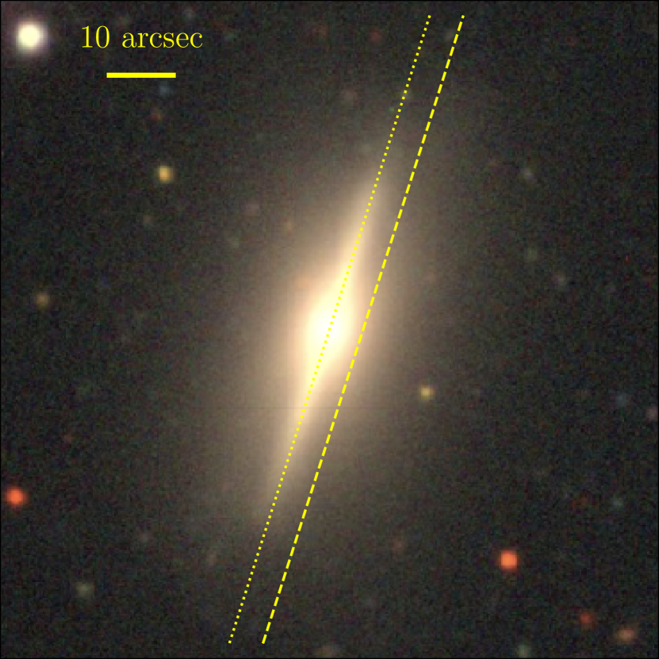
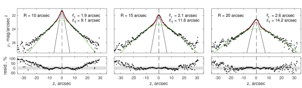
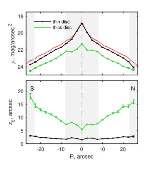
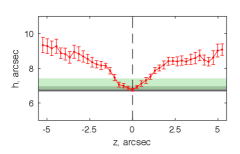
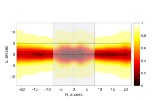
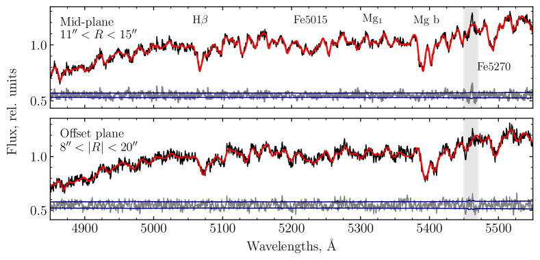
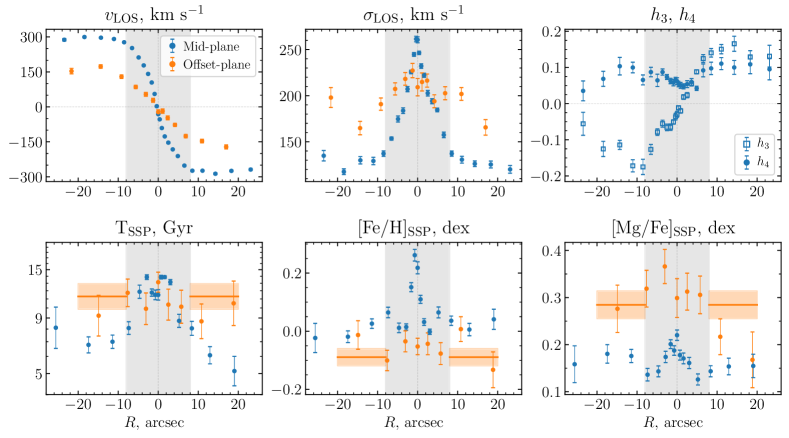
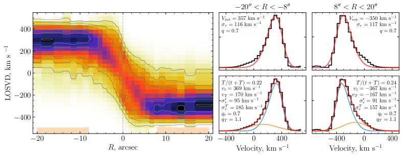
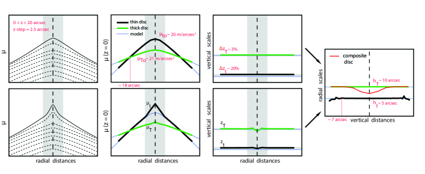
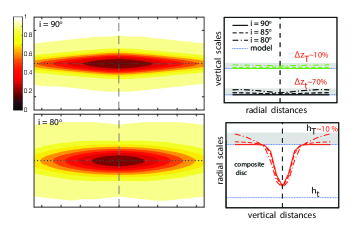

قرص سميك مفرط الكتلة في المجرة العدسية الضخمة المرئية من حافتها NGC 7572
الملخص
تُعرف الأقراص المجرية بأن لها بنية معقدة متعددة الطبقات. ويمكن لدراسة معمقة لخصائص التجمعات النجمية في المكونين الرقيق والسميك أن توضح تشكل المجرات القرصية وتطورها. ومع أن الأقراص السميكة واسعة الانتشار، فإن أصلها ما يزال موضع نقاش. نختبر هنا سيناريوهات تشكل القرص السميك من خلال دراسة NGC 7572، وهي مجرة ضخمة مرئية من حافتها لها kpc و km s-1، بما يتجاوز كثيرا حجم درب التبانة وكتلتها. حللنا صورا أرشيفية من DECaLS ووجدنا أن قرص NGC 7572 يحتوي على قرصين نجميين متفلطحين إلى الخارج (قرص رقيق وآخر سميك) بسلمين قطريين متشابهين. جمعنا بيانات طيفية عميقة بشق طويل باستعمال تلسكوب BTA الروسي ذي القطر 6m وحللناها بتقنية جديدة. أعدنا أولا بناء توزيع سرعات النجوم على خط النظر على نحو لا معلمي على امتداد نصف قطر المجرة، ثم وائمناه بمكونين حركيين يأخذان في الحسبان التوزيع المداري للنجوم في القرصين الرقيق والسميك. تبين أن القرص السميك القديم أكثر كتلة من المكون الرقيق متوسط العمر بمقدار 2.7 مرة، أي مقابل ، وهذا أمر غير مألوف للغاية. إن اختلاف مدة عصور التشكل الذي تشهد عليه قيم [Mg/Fe] البالغة +0.3 و +0.15 dex للقرصين السميك والرقيق على الترتيب، إلى جانب حركياتهما ونسبة كتلتيهما، يشير إلى أننا نرصد في NGC 7572 قرصا سميكا بالغ الكتلة تشكل بسرعة وقرصا رقيقا غير مكتمل النمو، انتهى نموه قبل أوانه بسبب استنفاد الغاز البارد، على الأرجح بفعل تأثيرات بيئية.
keywords:
المجرات: أقراص – المجرات: التطور – المجرات: مجرة مفردة: NGC75721 مقدمة
نقدم دراسة رصدية معمقة للمجرة القرصية العملاقة NGC 7572 المرئية من حافتها ولبنيتها القرصية الرأسية. تمثل NGC 7572 نظيرا عدسيا خاملا لما يسمى «اللوالب الفائقة»، وهي أضخم المجرات القرصية المكوِّنة للنجوم في الكون (Ogle et al., 2016). ويعود قطرها الصغير نسبيا مقارنة بالمجرات في Ogle et al. (2016) إلى نسبة الكتلة إلى الضوء الكبيرة في NGC 7572، الناجمة عن تجمعاتها النجمية القديمة. وبحسب تحليلنا، فإن مكون قرص NGC 7572 أكبر كتلة بخمس مرات من قرص درب التبانة (MW)11 1 تبلغ الكتلة الكلية للقرص النجمي في درب التبانة (بمكونيه الرقيق والسميك) نحو (Bland-Hawthorn & Gerhard, 2016).، وتصل سرعة دورانه إلى 370 km s-1 ونصف قطره إلى kpc22 2 القيمة هي نصف القطر متساوي السطوع عند 25 mag arcsec-2 في النطاق . (HyperLeda, Makarov et al., 2014) (انظر الشكل 1 والجدول 1). وبلمعان كلي في النطاق قدره L⊙ ولون مصحح mag، تكون NGC 7572 مضيئة مثل المجرات العنقودية اللامعة كمجرة Messier 87 في عنقود العذراء، وتقع عند الطرف اللامع من التتابع الأحمر الذي تشغله أضخم المجرات الإهليلجية ومجرات cD33 3 اللون المتوقع على التتابع الأحمر عند M mag هو mag (Chilingarian et al., 2017).. وتتيح لنا الخصائص الفريدة لهذا الجرم واتجاهه المرئي من الحافة فرصة لدراسة البنية الرأسية لمكونات قرص مجرة ذات حجم أكبر بكثير من حجم درب التبانة.
يمثل هذا العمل جزءا من برنامجنا الرصدي متعدد الدورات باستخدام تلسكوب BTA الروسي ذي القطر 6-m لدراسة البنية الرأسية للمجرات المرئية من حافتها في بيئات مختلفة (انظر Kasparova et al., 2016). وضع White et al. (1999) المجرة NGC 7572 في العنقود الفقير WBL 703 عند . غير أن عند الانزياح الأحمر نفسه ()، وعلى مسافة مسقطة مقدارها arcmin Mpc، يوجد العنقود غير المتفيرل Abell 2572 ذو نواتين لامعتين مندمجتين في الأشعة السينية. ومن ثم فإن هذه المجرة توجد في بيئة كثيفة نسبيا، يمكنها بلا شك أن تؤثر في تطورها. نعتمد Mpc مسافة لمعانية و Mpc مسافة حجم زاوي إلى NGC 7572 (وهي نفس المسافة اللمعانية المصححة كوسمولوجيا إلى Abell 2572 من NED). ويقابل ذلك سلما مكانيا مقداره kpc arcsec-1 ومعامل مسافة mag.
قبل عقود، اكتشف Burstein (1979) وTsikoudi (1979) وجود الأقراص السميكة أثناء دراستهما للمجرات العدسية. وبعد سنوات، حُدد في درب التبانة نظامان فرعيان مستويان بخصائص ديناميكية وخصائص تجمعات نجمية مختلفة جذريا (Gilmore & Reid, 1983; Majewski, 1993; Fuhrmann, 1998; Prochaska et al., 2000). ومع زيادة المسافة الرأسية عن المستوى المتوسط، تتناقص كثافة الحجم للنجوم الفتية الغنية بالمعادن بسرعة، وتصبح التجمعات النجمية مسيطرا عليها بنجوم قديمة وفقيرة بالمعادن ومعززة بـ (انظر مثلا Bland-Hawthorn & Gerhard, 2016). وقد عُزيت هذه الظاهرة إلى اختلاف شروط تشكل التجمعين و/أو تطورهما، وسُميا القرصين الرقيق والسميك (Haywood et al., 2013). وقدمت المسوح التصويرية والطيفية الحديثة واسعة المجال Gaia (Gaia Collaboration et al., 2016) وAPOGEE (Majewski et al., 2017) أدلة إضافية تؤيد الأصل المختلف لمكوني القرص في درب التبانة. وعلى وجه الخصوص، بين Mackereth et al. (2019) علاقات عمر–تشتت سرعة (AVRs) وأشكالا مختلفة جدا لتوزيعات في التجمعات النجمية ذات [/Fe] المنخفض والمرتفع، المقابلة للقرصين الرقيق والسميك على الترتيب. ومع ذلك، لا يوجد سوى عدد قليل من المجرات الخارجية التي تمتلك بيانات طيفية وفوتومترية بجودة كافية لفصل خصائص التجمعات النجمية في القرصين الرقيق والسميك بوضوح.
خلال العقد الماضي، نشرت عدة فرق نتائج تحليل البنية الرأسية لعينات كبيرة من المجرات المرئية من حافتها اعتمادا على البيانات الفوتومترية (Yoachim & Dalcanton, 2006; Comerón et al., 2011b, 2012; Bizyaev et al., 2014; Bizyaev et al., 2017; Comerón et al., 2018). غير أنه حتى الآن يوجد أقل من بضع عشرات من الأجرام ذات حركيات مفصلة وخصائص تجمعات نجمية للأقراص السميكة من التحليل الطيفي (Yoachim & Dalcanton, 2008b; Comerón et al., 2015, 2016; Guérou et al., 2016; Kasparova et al., 2016; Sarzi et al., 2018; Pinna et al., 2019a, b). ولا توجد بينها مجرات ضخمة بسرعات دائرية تتجاوز km s-1، ولا تزيد المجرات ذات الكتل القابلة للمقارنة بكتلة درب التبانة على ثلاث. ويحد ذلك بشدة من إمكانية مقارنة النتائج بقرص درب التبانة، كما يعقد التحقق من سيناريوهات تطور الأقراص المجرية. وما يزال مجهولا مدى تشابه البنية الرأسية للمجرات القرصية عبر الأنماط المورفولوجية المختلفة من غير المنتظمة إلى العدسية، وعبر اللمعانيات المختلفة من الأقزام إلى العمالقة، وما إذا كان هناك سيناريو كوني لأصلها، ومدى حرجية التأثيرات البيئية في هذه العمليات. وتجدر الإشارة إلى أن المقارنة المباشرة بين خصائص القرص السميك في درب التبانة، كما يُعرّف اعتمادا على كيميائه الحركية باستخدام نجوم منفردة، والأقراص السميكة في مجرات أخرى تُعرّف بالتحليل الفوتومتري، أمر صعب. ويرجع ذلك إلى أن التعريفين لا يتطابقان تماما. وأحد أسباب ذلك أن النجوم ذات [/Fe] المرتفع (لا سيما في جوار الشمس) قد تكون ذات أصلين مختلفين، هما القرص السميك نفسه والمناطق الداخلية من القرص الرقيق (Haywood et al., 2013; Hayden et al., 2017). ومع ذلك، ينبغي ألا نرفض تماما فكرة مقارنة البنية متعددة الطبقات لمجرتنا بمجرات أخرى. لذلك من الضروري توسيع عينة المجرات ذات البيانات الطيفية العالية الجودة للتجمعات النجمية السميكة والرقيقة، كي يمكن تحديد مكونات القرص مع أخذ الكيمياء والحركيات معا في الحسبان.
توجد عدة سيناريوهات تفسر البنية الرأسية المعقدة لأقراص المجرات. يمكن أن تتشكل الأقراص السميكة نتيجة للتطور العلماني للقرص الرقيق (Quinn et al., 1993; Schönrich & Binney, 2009; Villalobos et al., 2010). والاحتمال الثاني هو أصل خارجي للأقراص السميكة من أقمار قزمة ملتهمة (مثلا Abadi et al., 2003; Yoachim & Dalcanton, 2005). أما السيناريو الثالث فهو نموذج ذو مرحلتين يفترض تشكل القرص السميك عند انزياح أحمر عال (z ) يتبعه نمو تدريجي لقرص رقيق (Chiappini et al., 1997; Elmegreen & Elmegreen, 2006; Bournaud et al., 2009). ويمكن للحركيات الداخلية المكانية التمييز للقرصين الرقيق والسميك، مقترنة بتحليل التجمعات النجمية، أن تدعم سيناريو معينا في مجرة بعينها أو تدحضه، وهذا هو النهج الذي نتبعه في دراستنا.

المراجع: [1] NED (http://ned.ipac.caltech.edu)؛ [2] LEDA (http://leda.univ-lyon1.fr)؛ [3] EGIS (Bizyaev et al., 2014). اعتمدنا المسافة إلى NGC 7572 بوصفها المسافة اللمعانية المصححة كوسمولوجيا إلى Abell 2572 (من NED، والمعاملات الكوسمولوجية: km s-1 Mpc-1، و و ). أخذنا القدرين و من EGIS وصححناهما من أجل الانطفاء المجري (من NED) وتصحيح (Chilingarian et al., 2010; Chilingarian & Zolotukhin, 2012). سرعة الدوران مأخوذة من دراستنا.
| RA (J2000.0) | 23h16m50.s368 | – |
| DEC (J2000.0) | 18°28′5945 | – |
| Luminosity distance | 178 Mpc | [1] |
| Angular-size distance | 165 Mpc | [1] |
| Position angle | 162.3∘ | [2] |
| Rotation velocity | 3688 km s-1 | – |
| 0.51 arcmin | [2] | |
| mag | [3] | |
| (corrected) | 0.80 mag | [3] |
ينظم البحث على النحو الآتي. نعرض تحليلنا الفوتومتري والطيفي في القسم 2؛ وفي القسم 3 والقسم 4 نناقش نتائجنا ونلخصها؛ وفي الملحق A نختبر استقرار تحليلنا الفوتومتري ونستكشف المزالق المحتملة التي تظهر عند التعامل مع مجرات حقيقية «غير مثالية».

2 تحليل البيانات الأرشيفية والأرصاد الجديدة
2.1 التحليل الفوتومتري
استخدمنا صور DECaLS في النطاق (Dey et al., 2019) لتقدير المعاملات الفوتومترية لمكوني القرص في NGC 7572. حللنا شرائح منفردة بعرض ثانية قوسية واحدة على امتداد المحور الرأسي (مقاطع رأسية)، وحصلنا على مساهمة المكونين الرقيق والسميك في الكتلة الكلية، والعلاقة بين سلالمهما الرأسية والقطرية، وتغيرات السلم الرأسي مع نصف القطر.
2.1.1 تفكيك مقطع الضوء
استخدمنا عدة تقنيات مختلفة لتحليل البيانات الفوتومترية 2D و 1D أثناء اختيار أفضل طريقة لاستخراج خصائص قرص NGC 7572. غالبا ما يُظن أن تفكيك الصورة 2D تقنية أكثر تقدما من مواءمة شرائح منفردة على امتداد نصف القطر. غير أن تحليلنا لصور NGC 7572 بدوال IMFIT للمجرات المرئية من حافتها وذات السماكة الثابتة وفق Erwin (2015) ترك دائما بواقي قوية، ما يشير إلى ضرورة أخذ تزايد سماكة مكونات القرص في الجزء الخارجي من المجرة في الحسبان. وفي الوقت نفسه، فإن إضافة دوال جديدة ذات تغيرات سماكة غير معروفة قبليا تقتضي زيادة كبيرة في عدد المعاملات الحرة، مما يؤدي إلى الغموض والتدهورات بين المعاملات في الحل الأفضل مواءمة.
قدم Comerón et al. (2018) حديثا دراسة فوتومترية واسعة لبنى الأقراص متعددة المكونات في المجرات المرئية من حافتها (انظر أيضا Comerón et al., 2011b). اتبعت طريقتهم الصياغة التي قدمها Narayan & Jog (2002) وافترضت افتراضات محددة معينة. وعلى وجه الخصوص، يُفترض أن ارتفاعي السلم للقرصين الرقيق والسميك ثابتان وأن طولي السلم متشابهان، وإلا فإن التكامل على خط النظر في المجرات المرئية من حافتها يصبح غير بديهي (انظر القسم 3.2.2 في Comerón et al., 2018).
نهدف إلى قياس تغيرات سماكة مكونات قرص NGC 7572، ولذلك قررنا استخدام طريقة أبسط للتفكيك 1D للشرائح الرأسية عند مسافات قطرية مختلفة ، وهي تتعامل مع التفلطح إلى الخارج على نحو ملائم. في تحليلنا استبعدنا منطقة NGC 7572 المتأثرة بالانتفاخ أو القضيب عند arcsec، وهي أيضا مختلفة جذريا في تشتت السرعة النجمي وخصائص التجمعات النجمية عن بقية المجرة (انظر أدناه).
برهن Spitzer (1942) ثم Van der Kruit & Searle (1981) لاحقا أنه في قرص متساوي الحرارة في حالة توازن، يمكن وصف مقاطع كثافة القرص الرأسية بالقانون حيث هو ارتفاع السلم. في عملنا نستخدم مجموع مكونين من هذا النوع:
| (1) |
حيث تقابل و القرصين الرقيق والسميك. وعلى الرغم من أن هذا التقريب ليس مبررا فيزيائيا تماما، فإنه يتيح لنا مقارنة النتائج بدراسات رصدية أخرى وبمحاكيات عددية للبنية الرأسية للأقراص (Yoachim & Dalcanton, 2006; Bournaud et al., 2009; Villalobos et al., 2010; Loebman et al., 2011, وغيرها كثير). ومع ذلك، قارن Comerón et al. (2011b) وComerón et al. (2012) طريقة مواءمة أكثر دافعية فيزيائية بنموذج ثنائي–، وبيّنا أنها تقلل نسبة كتلتي القرصين السميك والرقيق بمقدار 20–30 per cent إجمالا. نلاحظ أنه بالنسبة إلى البنية الرأسية لدرب التبانة، يمكن تطبيق قانوني ثنائي– و – بنجاح (انظر المراجعة في Bland-Hawthorn & Gerhard, 2016).
نقدم في الملحق A سلسلة من الاختبارات التي تتنبأ بسلوك طريقتنا المبسطة في تقدير المعاملات الفوتومترية لنموذج مقبول على نطاق واسع لبنية المجرات القرصية، وهو قرصان مستويان بسماكة ثابتة على امتداد نصف القطر وبسلمين قطريين مختلفين. وقد استعدنا بنجاح السلمين الرأسي والقطري لكلا المكونين. كما نحلل استعادة خصائص القرص إذا لم تكن المجرة مرئية تماما من الحافة.
2.1.2 السلالم الرأسية
نعرض في الشكل 2 ثلاثة أمثلة على تفكيك المقاطع الرأسية عند و و arcsec. ومن الواضح أن نموذج أحادي المكون لا يستطيع وصف المقاطع المرصودة وصفا مناسبا. ونرى أيضا أن النموذج ثنائي المكونات يصف البيانات على نحو مرض في المقاطع العرضية الثلاثة على امتداد نصف القطر، على الأقل حتى مستوى سطوع سطحي قدره 25 mag arcsec-2، الذي يقابل نحو 12 kpc من المسافة الرأسية . غير أن هناك فائضا في الفيض عند 25.5–26 mag arcsec-2، وكلما اقتربنا من مركز المجرة أصبح الضوء الفائض أكثر وضوحا. ولا يمكن أن يكون هذا هالة نجمية لأنها تؤدي دورا جوهريا عند سطوعات سطحية أخفض بكثير في النطاقات البصرية (انظر مثلا Peters et al., 2017). لذلك فنحن نرى على الأرجح انحراف الصيغة التحليلية الثنائية– عن المقاطع المرصودة بسبب تكامل خط النظر لمناطق ذات سماكات مختلفة عند أنصاف أقطار مختلفة بفعل تأثيرات الإسقاط، أو بسبب خصوصيات عملية تشكل القرص السميك. حصل Qu et al. (2011a) على فائض نجمي مشابه في سلسلة من نماذج N-body/SPH لتشكل القرص السميك عبر اندماجات صغرى، ويتكون هذا الفائض بفعل التفاعلات المدية بين المجرة الأولية وقمر تابع تحدث مبكرا أثناء حدث الاندماج. وجد Comerón et al. (2018) هذه السمة في بعض أضخم المجرات وفسروها بوصفها علامة محتملة على مكون قرصي ثالث.
تجدر الإشارة إلى الأثر المحتمل للضوء المنتشر المبعثر. فبحسب Comerón et al. (2018) وMartínez-Lombilla & Knapen (2019)، يمكن لدالة انتشار النقطة (PSF) أن تغير توزيعات سطوع مكونات القرص تغييرا كبيرا، ويصبح هذا الأثر مهما بوجه خاص للمقاطع الرأسية في المجرات المرئية من حافتها. وعلاوة على ذلك، يمكن للتأثيرات المرتبطة بـ PSF أن تؤدي ليس فقط إلى زيادة تقديرات سماكة مكونات القرص، بل أيضا إلى إنقاصها على نحو غير حدسي (انظر NGC 0429 في Martínez-Lombilla & Knapen, 2019). إن PSF الخاصة بـ DECam أضيق بكثير من تلك الخاصة بأداة IRAC في تلسكوب Spitzer الفضائي، وكذلك من تلك الخاصة بـ SDSS. في القسم A نختبر التأثير المحتمل لـ PSF الخاصة بـ DECam في نتائجنا. وباستخدام طريقتنا، يمكن المبالغة في تقدير السلم الرأسي للقرص الرقيق بمقدار 20 per cent، أما في القرص السميك فلا يتجاوز الأثر 3 per cent. ولا تتغير تقديرات السلالم القطرية وقيم السطوع السطحي في المستوى المتوسط تغيرا ملحوظا. كما أننا لا نستطيع تفسير فائض الضوء عند ارتفاعات كبيرة بتأثيرات مرتبطة بـ PSF. وبحسب دليل أداة DECam، فإن PSF في النطاق عند نصف قطر 10–15 arcsec تهبط بمقدار 12–14 mag arcsec-2 عن القيمة العظمى.

يتضح من الشكل 2 أن ارتفاعات السلم الرأسية لكلا المكونين تزداد باتجاه أطراف المجرة. في الشكل 3 نعرض تغيرات السماكة والسطوع السطحي في المستوى المتوسط مع نصف القطر، كما حصلنا عليها من تفكيك الشرائح الرأسية. يبدي كلا المكونين تفلطحا إلى الخارج ملحوظا يبدأ عند kpc ( arcsec). يبلغ ارتفاع السلم للقرص الرقيق في الجزء الداخلي44 4 نبين في الملحق A أن طريقتنا تستبعد تأثير الانتفاخ على نحو مرض. arcsec، وينمو إلى arcsec في المناطق الخارجية. وينمو ارتفاع السلم للمكون السميك من arcsec بعامل مقداره اثنان. وهذا يثبت أن نموذج سماكة القرص الثابتة غير قابل للتطبيق على NGC 7572. ينبغي لنا هنا أن نضع في الحسبان أن اختيار دالة المواءمة وتأثيرات التكامل على خط النظر يؤثران حتما في تقدير سماكة مكون القرص. إضافة إلى ذلك، فإن تقديرات وربما في مناطق السطوع السطحي المنخفض مبالغ فيها قليلا بسبب تأثير PSF. لذلك لا تقدم طريقتنا إلا توصيفا من الدرجة الأولى للتفلطح إلى الخارج.
2.1.3 السلالم القطرية الحقيقية للقرصين السميك والرقيق
عند دراسة الخصائص الفوتومترية للمجرات القرصية المرئية من حافتها، نريد بالطبع معرفة السلالم القطرية للمكونين. وعلى وجه الخصوص، من المهم مقارنتها بتقديرات المعاملات المناظرة في درب التبانة. غير أن المقطع الفوتومتري القطري لا يمكن تفكيكه بلا لبس إلى مكونين رقيق وسميك بسبب (i) التدهور بين المعاملات، و(ii) غياب معرفة قبلية بمساهمتيهما النسبيتين في توزيع الضوء الكلي.
إذا قسنا طول السلم الأسي في مجرة مرئية من حافتها بمواءمة المعادلة الآتية مع مقطع الضوء المتكامل على امتداد المحور الكبير للقرص:
| (2) |
حيث إن هي دالة Bessel المعدلة (Van der Kruit & Searle, 1981)، فسنحصل على قيمة للقرص «المركب» الرقيق+السميك. غير أن هذه القيمة تؤخذ عادة على أنها السلم القطري للقرص الرقيق. ويُفترض كثيرا أيضا أن السلم القطري للمكون السميك يمكن اشتقاقه إما من المنطقة الخارجية للقرص بعد نصف قطر الانكسار/مضاد القطع في مقطع الضوء، أو عند ارتفاع معين فوق المستوى المتوسط (انظر مثلا Comerón et al., 2018). لكن «الركب» في المقطع القطري لمجرة مرئية من حافتها قد لا تكون علامة على الانتقال إلى منطقة هيمنة القرص السميك في الأطراف المجرية، بل قد ترتبط بتفلطح القرص إلى الخارج (Borlaff et al., 2016). وفي حالة سماكات المكونات غير الثابتة، سيصبح طول السلم القطري للقرص السميك المشتق من المقاطع فوق المستوى المتوسط مبالغا فيه (انظر أدناه).

يبدي مقطع الضوء في NGC 7572 «ركبا» ضعيفة عند arcsec، وهي أوضح في الجانب الشمالي (الجانب الأيمن من المركز في الشكل 3). ويبدو أن هناك قطعا للقرص الرقيق في الجانب الأيمن، لكن ضمن المجال arcsec تكون كلتا الطبقتين أسيّتين تقريبا وتمتلكان أطوال سلم متشابهة. اشتققنا أطوال السلم ضمن هذا المجال باستخدام المعادلة 2 على المقاطع القطرية للسطوع السطحي في المستوى المتوسط لكلا القرصين كما استُخرجت من مواءمات السطوع السطحي الرأسية لدينا (القسم 2.1.2). في الشكل 4 تحدد المناطق المظللة بالرمادي والأخضر أطوال السلم للقرصين الرقيق والسميك على الترتيب، ويعرض الخط الأحمر نتيجة تفكيك المقاطع القطرية لـ القرص المركب (المقاطع المحورية الكلية التي تشمل ضوء القرصين الرقيق والسميك) عند قيم مختلفة من .
تتطابق أطوال السلم للمكونين الرقيق والسميك قرب المستوى المتوسط ضمن الارتيابات ( arcsec و arcsec). ولا يعطي السلم القطري المواءم للقرص المركب فوق المستوى المتوسط (حيث يمكن إهمال مساهمة المكون الرقيق) قيمة طول سلم القرص السميك إلا في الحالة المثالية، لأن اتجاها معقدا في قد يظهر بسبب أثر التفلطح إلى الخارج و/أو إذا لم تكن المجرة مرئية تماما من الحافة (انظر الملحق A). نرى من الشكل 4 أننا إذا حاولنا تقدير السلم القطري للقرص السميك بمواءمة مقاطع السطوع السطحي فوق المستوى المتوسط بالمعادلة 2 فإننا نبالغ دائما في تقدير قيمته.

2.1.4 المساهمات النسبية للقرصين السميك والرقيق
تعطي إجراءات تفكيك المقاطع الرأسية الموصوفة آنفا، إضافة إلى أطوال السلم، تقديرا لنسبة القرص السميك إلى الرقيق على كامل صورة المجرة. في الشكل 5 نعرض خريطة لنسبة شدة القرص السميك إلى مكون القرص الكلي السميك الرقيق. من الشكل 3 والشكل 5 نرى أن مساهمة القرص السميك في المستوى الرئيس لـ NGC 7572 تبقى شبه ثابتة مع نصف القطر عند نحو 30 per cent، وتنمو حتى 90 per cent عندما نبتعد عن المستوى المتوسط إلى arcsec، حيث وضعنا الشق لأرصادنا الطيفية (انظر أدناه). لذلك يمكننا إهمال مساهمة نجوم القرص الرقيق عند arcsec.
وباستخدام تحليلنا الفوتومتري، نقدر أيضا اللمعان الكلي لمكونات قرص NGC 7572. ومع أخذ تغيرات ارتفاع السلم الرأسي المرصود مع نصف القطر في الحسبان، فإن اللمعان الكلي للمكونين الرقيق والسميك في النطاق هو و على الترتيب. ويبلغ تقديرنا للمعة الانتفاخ من نموذج IMFIT 2D نحو . صُححت هذه القيم من أجل الانطفاء المجري (من NED) وتصحيح (Chilingarian et al., 2010; Chilingarian & Zolotukhin, 2012).
يسمح لنا تحليلنا بنمذجة كيف ستبدو NGC 7572 إذا رُئيت وجها لوجه. باستخدام نموذجنا للبنية الرأسية للقرص، أزلنا إسقاطه إلى اتجاه وجها لوجه وكاملنا كلا المكونين في اتجاه . ثم حسبنا أطوال السلم القطرية «وجها لوجه»، فوجدنا أنها و arcsec للقرصين الرقيق والسميك على الترتيب. ينبغي ملاحظة أن هذه القيم تختلف عن القيم في المستوى المتوسط بسبب التفلطح الكبير إلى الخارج. وفي الرؤية «وجها لوجه»، سيساهم القرص السميك القديم الحار ديناميكيا بأكثر من 60 per cent في مقاطع الضوء، بينما يصبح تقدير نصف قطر القرص (أربعة سلالم قطرية) نحو kpc. وفي مجرة قرصية ضخمة مثل NGC 7572 إذا شوهدت في وضع غير حافي، فلن نستطيع تحليل حركيات قرصها الرقيق وتجمعاته النجمية مباشرة، لأن الضوء المتكامل سيكون مسيطرا عليه بقرصها السميك.
2.2 الأرصاد الطيفية وتحليل البيانات

هذه الدراسة استمرار لبرنامجنا الرصدي الذي وصفنا منهجيته وقدمنا أول نتائج تحليل البيانات الطيفية فيه في Kasparova et al. (2016). ولتقدير خصائص التجمعات النجمية لمكوني القرص الرقيق والسميك في NGC 7572، جمعنا أطيافا عميقة بشق طويل باستخدام موضعي شق (انظر الشكل 1)، يغطيان المستوى المتوسط للمجرة والمنطقة الواقعة فوقه عند arcsec، حيث يسود القرص السميك.
2.2.1 الأرصاد واختزال البيانات
رصدنا NGC 7572 باستخدام المطياف العام SCORPIO (Afanasiev & Moiseev, 2005) العامل عند البؤرة الأولية لتلسكوب BTA الروسي ذي القطر 6m. استخدمنا المحزز الهولوغرافي ذي الطور الحجمي “VPHG2300G”، الذي يوفر تمييزا طيفيا بعرض كامل عند نصف القيمة العظمى FWHM قدره Å يقابل km s-1 في مصطلحات تشتت السرعة، مع شق عرضه 1 arcsec وطوله 6 arcmin في مجال الأطوال الموجية Å. حصلنا على طيفي المستوى المتوسط والقرص السميك كليهما في ليلة 07–08/09/2016 في ظروف جوية جيدة (رؤية FWHM مقدارها 1.4 arcsec) وبأزمنة تعريض 6000 s (المستوى المتوسط) و 9000 s (القرص السميك). تظهر مواضع الشق في الشكل 1. وقد وفر كاشف CCD EEV42-40 ( بكسل) عينة طيفية قدرها 0.37 Å pix-1 وسلما صفائحيا للشق قدره 0.36 arcsec pix-1 مع تجميع . وإضافة إلى الأطياف العلمية، حصلنا على حقول مسطحة داخلية ليلية وأقواس He-Ne-Ar، وكذلك أطياف شفقية ونجم قياسي طيفي ضوئي.
اختزلنا البيانات الطيفية بخط أنابيب خاص بنا مبني على idl وشمل الخطوات الآتية: طرح الانحياز، وتصحيح المجال المسطح، وإزالة ضربات الأشعة الكونية باستخدام تقنية الترشيح اللابلاسي (Van Dokkum, 2001)، ومعايرة الطول الموجي وخطيته، وطرح السماء ومعايرة الفيض. يمتلك SCORPIO دالة انتشار خطية آلية (LSF) ذات شكل معقد غير غاوسي، وتتغير على امتداد اتجاهات التشتت وعبرها. ولأخذ تغيرات LSF في الحسبان في التحليل اللاحق، حددنا شكلها بتمثيل Gauss–Hermite باستخدام أطياف شفقية عالية نسبة الإشارة إلى الضجيج رُصدت بالإعداد الآلي نفسه. وقد قدرنا خلفية سماء الليل من مناطق الشق الخارجية غير المغطاة بمجرتنا الهدف، ثم استخدمنا تقنية طرح سماء محسنة تأخذ في الحسبان تغيرات LSF على امتداد الشق (Katkov & Chilingarian, 2011; Katkov et al., 2014). حسبنا لارتيابات الفيض من إحصاء الفوتونات في المرحلة الأولى من الاختزال، وتتبعناها عبر جميع خطوات الاختزال.
2.2.2 مواءمة الطيف الكامل
لاشتقاق الحركيات الداخلية وخصائص التجمعات النجمية (الأعمار المتوسطة، والفلزيات [Fe/H]، ووفرات عناصر [Mg/Fe]) للقرصين الرقيق والسميك، طبقنا تقنية NBursts لمواءمة الطيف الكامل (Chilingarian et al., 2007a, b)، بعد أن حدثناها بإدراج مواءمة وفرات عناصر . استخدمنا شبكتين مختلفتين من نماذج التجمعات النجمية البسيطة (SSP). ولتحسين تقييد الحركيات الداخلية استخدمنا SSPs عالية التمييز () من pegase.hr (Le Borgne et al., 2004). واشتُقت أعمار التجمعات النجمية وفلزياتها ووفرة باستخدام نماذج miles v1 متوسطة التمييز (1) (Vazdekis et al., 2015)، حيث تتوافر شبكتا SSP لتجمعات ذات [Mg/Fe] dex بمقياس شمسي وذات [Mg/Fe] dex معززة بـ ، وباستخدام دالة الكتلة النجمية Kroupa (2002).
تنفذ تقنية NBursts خوارزمية تصغير في فضاء البكسلات، حيث يقارب الطيف المرصود بنموذج تجمع نجمي موسع بتوزيع سرعات خط النظر (LOSVD) معلمي ومضروب في متصل كثير حدود لأخذ توهين الغبار و/أو عيوب معايرة الفيض المحتملة في الأرصاد والنماذج في الحسبان. والخطوة الحسابية الرئيسة أثناء تصغير هي استيفاء الطيف من شبكة التجمعات النجمية وفق معاملات النموذج المعطاة. بالنسبة إلى نماذج pegase.hr استخدمنا استيفاء شُريحيا 2D عبر الأعمار والفلزيات كما هو مطبق في النسخة الأصلية من NBursts. وتحتوي مكتبة miles v11 على قيمتين لـ [Mg/Fe] (0.0 dex و +0.4 dex). ولإدراج بعد [Mg/Fe] باستخدام هذه الشبكة، عدلنا إجراء الاستيفاء بتشغيل الاستيفاء الشريحي 2D مرتين لكلتا قيمتي [Mg/Fe]، ثم أجرينا استيفاء خطيا على محور [Mg/Fe]. وقد وفر هذا النهج نتائج متسقة تماما مع المسح المباشر لفضاء على محور [Mg/Fe] مفرط العينة المعروض في Chilingarian & Asa’d (2018). ولأخذ التوسيع الآلي في الحسبان، قمنا مسبقا بطي شبكة نماذج التجمعات النجمية مع LSF المشتقة من الأطياف الشفقية كما وصفنا آنفا.
قبل مواءمة الطيف الكامل، جمعنا أطياف الشق الطويل في الاتجاه المكاني باستخدام حاويات تزداد أحجامها خطيا مع الابتعاد عن مركز المجرة، مع اشتراط نسبة إشارة إلى ضجيج () دنيا معينة55 5 حسبنا في المجال الطيفي Å. ( و 11 في حالتي طيف المستوى المتوسط والطيف المزاح على الترتيب). ويختلف التجميع على امتداد الشق بين مقاطع الحركيات ومقاطع التجمعات النجمية في مجموعتي البيانات الطيفية. تمتلك أطياف موضع الشق المزاح الذي غطى مكون القرص السميك قيمة منخفضة نسبيا. لذلك، ومن أجل تحليل التجمعات النجمية، حسبنا حاوية مكانية كبيرة ( arcsec) إضافة إلى الحاويات المنتظمة. وقبل جمع الأطياف داخل هذه الحاوية، أخذنا منحنى دوران المجرة في الحسبان بتحريك كل طيف عند كل بكسل غير مجمع إلى السرعة النظامية نفسها. تظهر أمثلة للأطياف مع نماذجها الأفضل مواءمة في الشكل 6. استُخرج طيف المستوى المتوسط عند نصف قطر 12.3 arcsec، أما طيف القرص السميك فجُمع على كامل الحاوية الكبيرة. قدرنا لارتيابات المعاملات المشتقة بتشغيل محاكاة Monte-Carlo لمئة تحقيق من أطياف اصطناعية لكل حاوية مكانية، أُنشئت بإضافة ضجيج عشوائي إلى النموذج الأفضل مواءمة الموافق لنسبة الإشارة إلى الضجيج في تلك الحاوية.

تظهر خصائص التجمعات النجمية المعاد بناؤها لكلا الشقين في الشكل 7. نرى فرقا واضحا في المعاملات بين طيفي المستوى المتوسط والمزاح، حيث يهيمن القرصان الرقيق والسميك على الترتيب. وخارج منطقة الانتفاخ ( arcsec)، نرى تجمعا نجميا متوسط العمر Gyr في المستوى المتوسط، وتجمعا أقدم Gyr في المستوى المزاح. أما الفلزيات فهي شمسية أو دون شمسية قليلا في مناطق القرص في كلا الشقين. وتظهر قيم وفرة فرقا واضحا بين موضعي المستوى المتوسط [Mg/Fe] dex والشق المزاح [Mg/Fe] dex. ولا نجد تدرجات قطرية مهمة في خصائص التجمعات النجمية لمكونات القرص.
تمتلك المنطقة المركزية من المجرة تجمعا نجميا قديما Gyr. وهذا شبيه بعمر القرص السميك الذي يهيمن على المساهمة في طيف الشق المزاح حتى قرب المحور الرئيس للمجرة. توجد قمة فلزية حادة في الجزء النووي من المجرة، حيث تصل [Fe/H] إلى 0.25 dex مقارنة بـ 0.05 dex على بعد بضع ثوان قوسية، وهي علامة على نواة منفصلة كيميائيا. ومن البيانات المتاحة لا يمكننا الجزم بما إذا كنا نرى انتفاخا حقيقيا في المنطقة المركزية من NGC 7572 أم قضيبها ضخما في قرصها الرقيق. ويرجح الخيار الأخير بفعل قيم [Mg/Fe] المنخفضة نسبيا، غير أن مسألة ما إذا كان يمكن لقضيب أن يوجد داخل قرص حار ديناميكيا إلى هذا الحد لا يمكن الإجابة عنها إلا بمحاكيات عددية مخصصة. تبلغ سرعة خط النظر في المستوى المتوسط هضبة عند نحو 300 km s-1، ويبلغ تشتت السرعة في المنطقة التي يهيمن عليها القرص نحو 120 km s-1. وفي المستوى المزاح، تصل إلى 150 km s-1 ويبلغ تشتت السرعة قيمة عالية قدرها km s-1.
من خصائص التجمعات النجمية المقدرة من نماذج SSP من miles v11 حسبنا متوسط نسبتي الكتلة إلى الضوء و بوحدات شمسية للمكونين الرقيق والسميك في نطاق SDSS .
يسمح لنا التمييز الطيفي ونسبة الإشارة إلى الضجيج العالية في البيانات بتقدير المعاملين و على امتداد شق المستوى المتوسط. وتشير القيم غير الصفرية لمعاملي ، ولا سيما ، إلى شكل LOSVD شديد اللاغاوسية وغير متماثل. إن التضاد بين مقاطع السرعة و (كما في حالة NGC 7572) معروف في المجرات المرئية من حافتها (Chung & Bureau, 2004)، لكن مثل هذه القيم الكبيرة لـ (حتى 0.2) توحي بأنها قد تكون نتيجة مساهمة ملحوظة من مكون القرص السميك ذي سرعة دوران منخفضة مقارنة بسرعة القرص الرقيق. لم نجد انحرافات مهمة عن شكل LOSVD الغاوسي في الأطياف المزاحة، كما يدل على ذلك أن و لهما قيمتان صفريتان ضمن الارتيابات.
2.2.3 إعادة بناء LOSVD لا معلمية ونموذج ثنائي المكونات لحركيات القرص

لتوضيح ما إذا كان القرص السميك يؤثر في حركيات المستوى المتوسط، أعدنا بناء LOSVD بطريقة لا معلمية. يمكن اعتبار فك الالتفاف مسألة عكسية خطية يمكن تقدير حلها باستخدام تقنية المربعات الصغرى. استخدمنا تنظيما من الرتبة الصفرية (القسم 19.4.1، Press et al., 2007) لتثبيت الحل، وهو شديد الحساسية للضجيج في البيانات. ويمكن التعبير عن المسألة العكسية المنظمة كما يأتي:
| (3) |
حيث طيف مرصود أعيد تجميعه لوغاريتميا في مجال الطول الموجي، و مصفوفة ، حيث يحتوي كل صف على طيف قالب بطول بكسل مزاح في السرعة بما يقابل عنصرا معينا من LOSVD ، و معامل تنظيم حر. ولحل هذه المسألة عدديا، استخدمنا طريقة المربعات الصغرى ذات المتغيرات المحدودة (BVLS) (Lawson & Hanson, 1995) التي طبقها M. Cappellari66 6 روتين BVLS الذي طبقه M. Cappellari متاح على صفحته الإلكترونية http://www-astro.physics.ox.ac.uk/~mxc/software/ لأننا نحتاج إلى فرض قيد الإيجابية على LOSVD. واستخدمنا قالبا أفضل نماذج SSP مواءمة من تحليل NBursts للتجمعات النجمية، وقد وسعناها فقط بـ LSF الآلية. طبقنا نهجا مشابها في السابق لإعادة بناء LOSVD في عدة مجرات ذات أقراص نجمية متعاكسة الدوران (Katkov et al., 2013, 2016). يوضح الشكل 8 نتيجة إعادة بناء LOSVD النجمية في أطياف المستوى المتوسط لحاويتين مكانيتين موضعتين تناظريا على جانبي المجرة المختلفين عند و arcsec.
تبدو LOSVD النجمية المعاد بناؤها غير متماثلة جدا، مع أجنحة ممتدة نحو سرعات دورانية منخفضة (انظر الشكل 8)، ونعزو ذلك إلى وجود مكون بطيء الدوران ناشئ من القرص السميك. ولتكميم مساهمة القرص السميك في الطيف المتكامل على خط النظر، طبقنا أولا نهجا مبسطا بتفكيك LOSVD المعاد بناؤها إلى مكونين غاوسيين، مع افتراض مكون ضيق عالي السرعة يقابل القرص الرقيق ومكون عريض بطيء الدوران يقابل القرص السميك. ولم تبد نتيجة النموذج الأفضل مواءمة موثوقة، لأنها أعطت مساهمتين متقاربتين تقريبا للمكونين، وهذا كان في تعارض واضح مع تفكيك المقاطع الفوتومترية (انظر أعلاه).
ثم طبقنا نهجا ذا دافعية فيزيائية بتكامل LOSVD الموزونة باللمعان على امتداد خط النظر وأخذ البنية المدارية لمكونات القرص في الحسبان. وتحديدا افترضنا أن (i) LOSVD لنقطة معينة على امتداد خط النظر هي إسقاط للتوزيع المداري Schwarzschild (مجموعة توزيعات غاوسية على امتداد كل إحداثي في فضاء السرعات) عند مسافة مجرية مركزية معينة؛ و(ii) أوزان LOSVD تتناقص أسيا مع المسافة المجرية المركزية بسلالم مشتقة من التحليل الفوتومتري؛ و(iii) لا يوجد تدرج في تشتتي السرعة القطري والسمتي. معاملات نموذجنا هي: السرعة الدائرية ، وتشتت السرعة القطري ، ونسبة مكوني تشتت السرعة القطري إلى السمتي . وتقنيتنا في الواقع تطبيق للنهج الموصوف في Zasov & Khoperskov (2003) على بيانات رصدية. وبسبب التدهور القوي بين و ، ثبتنا عند قيمة المحسوبة لمنحنى دوران مسطح ضمن التقريب فوق التدويري، الذي ينبغي أن يصح لقرص رقيق بارد ديناميكيا نسبيا. وتبين اللوحتان العلويتان في النصف الأيمن من الشكل 8 بوضوح أن LOSVDs المعاد بناؤها (الخطوط السوداء المتدرجة) لا توائم جيدا بنموذج أحادي المكون (الخطوط الحمراء المتصلة).
ثم استخدمنا نموذجا ثنائي المكونات، حيث ثُبت لمكون القرص الرقيق وتُرك معاملا حرا للقرص السميك، الذي يُفترض أنه حار جدا بحيث لا يصح التقريب فوق التدويري. يمتلك النموذج ثنائي المكونات معاملا إضافيا واحدا، هو المساهمة النسبية للمكونين. وفي كلتا الحاويتين القطريتين، يعيد النموذج إنتاج LOSVDs المعاد بناؤها بدقة عالية (انظر اللوحات السفلى على الجانب الأيمن من الشكل 8). من هذه النمذجة، حصلنا على تشتت سرعة قطري للقرص الرقيق قدره km s-1، وعلى قيمة أكبر بكثير للقرص السميك km s-1. وتقابل النسبة بين مكونات التشتت للقرص السميك توزيعا متساوي الخواص لتشتت السرعة النجمي. وتبين أن سرعة دوران القرص السميك المصححة هي km s-1 بينما تصل للقرص الرقيق إلى km s-1. لاحظ أن تقديرات السرعة الدورانية من نمذجتنا خالية من أثر الانجراف اللامتناظر وتمثل السرعة الدائرية الحقيقية لمجرة عند مسافة معينة من مركز المجرة. ويعطي تفكيك LOSVD ثنائي المكونات مساهمة للقرص السميك في أطياف المستوى المتوسط قدرها 23 per cent، وهي متسقة تماما مع التحليل الفوتومتري ( per cent، انظر القسم 2.1.4).
| Thin disc | Thick disc | |
| Photometry | ||
| Radial scalelength | kpc | kpc |
| Central scaleheight | kpc | kpc |
| Flaring | Yes | Yes |
| Total mass | ||
| Slit positions: | kpc | kpc |
| km s-1 | km s-1 | |
| km s-1 | km s-1 | |
| 5–8 Gyr | 10–13 Gyr | |
| [Fe/H] | dex | dex |
| [Mg/Fe] | 0.15 | 0.3 |
| 3.1 | 4.6 | |
| LOSVD analysis of the mid-plane spectrum | ||
| Rotation velocity | km s-1 | km s-1 |
| Radial dispersion | km s-1 | km s-1 |
| 0.7 | ||
3 مناقشة
توجد عدة سيناريوهات تفسر اختلاف خصائص التجمعات النجمية في القرصين الرقيق والسميك. (i) قد يتشكل القرص السميك نتيجة للتطور العلماني للقرص الرقيق، إذ يغير بنيته القطرية والرأسية بفعل آثار الهجرة القطرية (Schönrich & Binney, 2009; Minchev & Famaey, 2010; Loebman et al., 2011; Minchev et al., 2015)، والتسخين الديناميكي بواسطة السحب الجزيئية العملاقة (Spitzer & Schwarzschild, 1953; Lacey, 1984) و/أو الاندماجات الصغرى (Quinn et al., 1993; Villalobos et al., 2010; Qu et al., 2011b). (ii) يفترض سيناريو الالتقاط أن النجوم التي نرصدها على أنها قرص سميك تشكلت أساسا في مجرات قزمة تابعة اندمجت مع المضيف وبنت مكونا قرصيا مسخنا ديناميكيا (مثلا Abadi et al., 2003). (iii) يصف نموذج ذو مرحلتين تشكل القرص السميك عند انزياح أحمر عال (z ) في وسط بين نجمي عالي الكثافة وعالي تشتت السرعة (Elmegreen & Elmegreen, 2006; Bournaud et al., 2009; Lehnert et al., 2014). وبعد ذلك، يتشكل قرص رقيق من إمداد إضافي بالغاز من مصدر خارجي. وقد تأتي طبقة الغاز الرقيقة الجديدة من خيوط بين مجرية (Chiappini et al., 1997; Combes, 2014)، أو اندماجات صغرى رطبة (Sil’chenko et al., 2011)، أو نتيجة لتبريد غاز مقذوف سابقا عبر التغذية الراجعة النجمية (Fraternali et al., 2013)، أو غاز متبق من مرحلة تشكل القرص الأول (السميك) (نماذج «من الأعلى إلى الأسفل» في Burkert et al., 1992; Bird et al., 2013). وتفسر المجموعة الأخيرة من السيناريوهات طبيعيا وجود تأخر زمني مرصود بين بدء تشكل النجوم في القرصين الرقيق والسميك في درب التبانة (انظر مثلا Lehnert et al., 2014; Kilic et al., 2017).
ليس من المرجح أن يكون القرص السميك قد تشكل في حدث التقاط رئيس، لأن نسبة النجوم المعاكسة الدوران في الأقراص السميكة للمجرات الضخمة منخفضة جدا، وكان ينبغي أن تُرصد هذه النجوم بشيوع أكبر لو حدث مثل هذا السيناريو (Yoachim & Dalcanton, 2008a; Comerón et al., 2015, 2019; Kasparova et al., 2016). ومع ذلك، فإن الرفض الحاسم لهذا السيناريو يتطلب الحصول على بيانات رصدية عن البنية الرأسية للأقراص العملاقة.
المجرات القرصية العملاقة مفرطة الكتلة نادرة جدا ومدروسة بصورة محدودة (انظر مثلا Saburova, 2018). لذلك فإن حصولنا على بيانات طيفية ضوئية عالية الجودة لـ NGC 7572، وهي مجرة مرئية من حافتها بحجم قابل للمقارنة مع الأجرام التي ناقشها Saburova (2018)، أمر مهم. وبحسب Saburova (2018)، تمثل المجرات العملاقة ذات kpc نحو 1 per cent من كامل تعداد الأقراص ذات زوايا الميل . وتبلغ الأجرام ذات سرعات دوران km s-1 نسبة 4 per cent من عينة Saburova للمجرات العملاقة. وبحسب المفاهيم الحديثة، ينبغي أن تكون كل المجرات العملاقة تقريبا ذات كتل قد شهدت اندماجا رئيسيا واحدا على الأقل (Rodriguez-Gomez et al., 2015). وخلال حدث كهذا يُعتقد أن البنية القرصية الأولية تُدمَّر، لكن قرصا جديدا قد يعاد تكوينه لاحقا في بعض الحالات (Puech et al., 2012; Peschken et al., 2019). والسؤال الرئيس هو: «ما خصائص التجمعات النجمية وخصوصيات البنية الرأسية لمثل هذا القرص المعاد تشكله؟»
يترك كل آلية لتشكل القرص السميك سجلا أحفوريا في الحركيات المرصودة وخصائص التجمعات النجمية للمجرات. نناقش أدناه الحقائق الرصدية الرئيسة المتعلقة بـ NGC 7572 (الجدول 2)، ونقارنها بدرب التبانة وبأجرام أخرى. ثم نستخدمها لاختبار سيناريوهات مختلفة لأصل القرص السميك. نقارن بياناتنا بنماذج عددية صُممت أساسا لمجرات شبيهة بدرب التبانة من حيث الكتلة والحجم. وسيكون من المهم امتلاك مكتبات لمحاكيات مجرية تغطي مجرات عالية الكتلة جدا مثل المجرة المدروسة هنا.
3.1 الخصائص المرصودة لـ NGC 7572
NGC 7572 مجرة عملاقة عدسية لا تظهر علامات على وجود الغاز البارد أو تشكل نجمي حالي، وهو ما يؤكده غياب خطوط الانبعاث في طيف المستوى المتوسط وعدم كشف Hi بحسب Springob et al. (2005). تصل سرعة دورانها إلى km s-1، وكتلة قرصها الكلية أكبر من خمسة أضعاف كتلة قرص درب التبانة. وتُعد سرعات الدوران العالية هذه نموذجية في «اللوالب الفائقة» (Ogle et al., 2016) والمجرات العملاقة منخفضة السطوع السطحي LSB (Saburova et al., 2018)، وهي نادرة للغاية. تمتلك NGC 7572 بنية رأسية معقدة، ولوصفها وصفا ملائما نحتاج إلى مكونين متفلطحين إلى الخارج على الأقل (رقيق وسميك) بسلالم قطرية متشابهة جدا في المستوى المتوسط. كتلة نجوم القرص السميك أكبر من ضعف كتلة القرص الرقيق، مقابل . وتزداد مساهمة المكون السميك في الفيض الكلي من 30 per cent إلى 90 per cent عندما ننتقل من المستوى المتوسط إلى kpc فوقه، وتتغير قليلا مع نصف القطر.
لم نكشف أي تدرجات قطرية مهمة في خصائص التجمعات النجمية خارج منطقة الانتفاخ. في المستوى المتوسط نرى نجوما متوسطة العمر ( Gyr)، في حين أن التجمع النجمي للقرص السميك أقدم، Gyr. وعلى الرغم من التشابه في الفلزيات بين القرصين الرقيق والسميك ([Fe/H] dex و [Fe/H] dex)، فإن الفرق في وفرة مهم إحصائيا ([Mg/Fe]t=+0.15 dex مقابل [Mg/Fe]T=+0.3 dex). ويشير ذلك إلى أن عصور تشكل مكوني القرص امتدت لفترات مختلفة (انظر مثلا Thomas et al., 2005). وبحسب المعادلة 4 في Thomas et al. (2005)، تشكل القرص السميك بسرعة خلال Gyr، بينما نما القرص الرقيق خلال فترة أطول بكثير (2 Gyr).
من النمذجة اللامعلمية لـ LOSVD النجمية لأطياف المستوى المتوسط، قدرنا سرعات الدوران وتشتتات السرعة القطرية للقرصين الرقيق والسميك في المستوى الرئيس المجري: km s-1 و km s-1 للقرص الرقيق، و km s-1 و km s-1 للقرص السميك. وتدل القيمة العالية لـ على أن القرص السميك في NGC 7572 نظام فرعي حار ديناميكيا لا يصح فيه التقريب فوق التدويري، ولذلك يجب معاملة كمعامل حر في نمذجة LOSVD. اشتققنا للقرص السميك ، بينما ثبتناه للمكون الرقيق عند وفق التقريب فوق التدويري، وهو صالح لقرص رقيق بارد نسبيا (). وبافتراض أن لا يتغير على امتداد المحور ، ومع الأخذ في الحسبان أن تشتت سرعة خط النظر للقرص السميك عند 4 kpc فوق المستوى المتوسط قريب جدا من قيمته في المستوى المتوسط، نستنتج أن للقرص السميك في NGC 7572 قريب من الثبات (على نحو مشابه لدرب التبانة بحسب Mackereth et al., 2019).
كشفنا أجنحة ممتدة في المقاطع الفوتومترية الرأسية، ملحوظة في الجزء الداخلي من القرص (يوجد فائض الضوء عند arcsec)، ولا يصفها النموذج ثنائي المكونات. وجد Comerón et al. (2018) سمات مشابهة في 6 per cent من عينتهم (وهي بالتحديد أضخم المجرات) رغم استخدام معادلات ذاتية الاتساق لتعريف المقاطع الرأسية وأخذ الضوء المنتشر المبعثر في الحسبان. وحصل Qu et al. (2011a) على فائض نجمي إضافي مشابه في النماذج العددية لتشكل القرص السميك عبر اندماجات صغرى. ورغم أن ذلك يحتاج إلى تأكيد عددي، فإننا نعتقد أن هذا الأثر يمكن تفسيره بطريقتين إضافيتين: (i) إن تكامل خط النظر للضوء من مكونين متفلطحين إلى الخارج وغير شبيهين تماما بـ ينبغي أن ينتج فائضا في الفيض، يكون أكثر وضوحا عند الصغيرة، كما نرصده في NGC 7572؛ (ii) قد تمثل الأجنحة مكونا بنيويا إضافيا للقرص إذا اعتبرنا سيناريو تشكل ذي مرحلتين للبنية القرصية الرأسية (مثلا Chiappini et al., 1997) بوصفه أبسط حالة لسيناريو متعدد المراحل يمكن، من حيث المبدأ، أن يؤدي إلى تشكل ثلاث طبقات قرصية أو أكثر (انظر أيضا NGC 4013 في Comerón et al., 2011a). وينبغي أن تكون احتمالية مثل هذه النوبات المتكررة من تشكل القرص أعلى في المجرات الضخمة. والسؤالان الرئيسان اللذان ينبغي الإجابة عنهما في هذا السيناريو هما: «كم من الوقت يلزم لكل مرحلة من مراحل تشكل القرص؟» و«هل لدينا الحساسية الآلية للحصول على تأكيد رصدي لهذا السيناريو؟»
3.2 بصمات سيناريوهات بناء القرص
عند النظر في السيناريوهات الملائمة لتشكل قرص NGC 7572، نؤكد أولا أن قرصها السميك لا يمكن أن يكون قد تكون من نجوم مجرات قزمة ملتهمة، لأن التجمعات النجمية في الأقزام عادة ما تمتلك فلزيات ونسب [Mg/Fe] أقل (انظر مثلا Chilingarian, 2009) مما نرصده في NGC 7572. وبحسب Forbes et al. (2004)، فإن خصائص التجمعات النجمية في القرص السميك لدرب التبانة لا تتوافق مع نموذج كهذا أيضا.
3.2.1 حركيات مكونات القرص النجمية
تشير البيانات الرصدية إلى أن التجمعات النجمية للقرصين الرقيق والسميك في درب التبانة تمتلك حركيات مختلفة، ولا سيما تشتتات السرعة وأنصاف الأقطار المدارية المتوسطة (Lee et al., 2011; Yu & Liu, 2018; Mackereth et al., 2019). وتتحدى عدة نماذج عددية قدرة الهجرة القطرية وحدها على إنشاء قرص سميك من نجوم ذات تشتت كبير عبر نقل النجوم المولودة في المناطق الداخلية من القرص بعيدا عن المستوى المتوسط (انظر Minchev et al., 2012). غير أن Loebman et al. (2011) وRoškar et al. (2013) أعادا إنتاج هذا الأثر في نماذجهما. وفي حالة NGC 7572، تمتلك المنطقة الداخلية من القرص/الانتفاخ قيمة تشتت سرعة قابلة للمقارنة بقيمة القرص السميك. وتشير الأعمار القديمة جدا المرصودة في هذه المنطقة إلى أن نوبة التشكل النجمي اللاحقة لم تؤثر فيها تأثيرا مهما. وتستبعد الفلزية النجمية العالية و[Mg/Fe] المنخفض نسبيا احتمال أن تكون المنطقة الداخلية في المستوى المتوسط مصدر النجوم المرصودة في القرص السميك لـ NGC 7572.
على الرغم من أننا لا نملك بيانات لبناء AVRs لـ NGC 7572 من أجل تحليل عملية تسخين القرص الرقيق، فإن بعض السمات المرصودة تسمح لنا برفض سيناريو تسخين القرص الرقيق. فتشتت سرعة القرص الرقيق في NGC 7572 أكبر من تشتت سرعة القرص السميك في درب التبانة (Bland-Hawthorn & Gerhard, 2016)، وهو خامد وغير خاضع لتسخين إضافي. وعلاوة على ذلك، إذا كان المكون السميك نتيجة لتسخين القرص الرقيق بتأثير السحب الجزيئية العملاقة، فإن تشتت السرعة القطري للمكون عالي–[/Fe] سيكون أقل من المرصود. وفعلا، فإن آلية التسخين هذه غير كافية لتفسير الخصائص المرصودة للقرص السميك في درب التبانة (Aumer et al., 2016; Yu & Liu, 2018). وما لم تكن GMCs أكثر فاعلية بكثير في تشتيت النجوم في NGC 7572 منها في درب التبانة، فلا بد أن ينطبق الأمر نفسه في NGC 7572. ومن ثم فمن الطبيعي أكثر تفسير نسبة تشتتات السرعة المرصودة في قرصي NGC 7572 بأن قرصها السميك تشكل قبل قرصها الرقيق.
3.2.2 أطوال السلم القطرية لمكونات القرص
تعد نسبة أطوال السلم القطرية للمكونين الرقيق والسميك مؤشرا مهما على سيناريو تشكل القرص. في سيناريوهات من الأعلى إلى الأسفل، ينبغي أن يكون السلم القطري للقرص الرقيق الأصغر عمرا أكبر من سلم القرص السميك (انظر مثلا Bird et al., 2013; Lehnert et al., 2014)، لأن القرص الرقيق يتشكل من غاز ذي زخم زاوي أعلى من مادة القرص السميك. وبحسب نماذج Stinson et al. (2013)، تنمو أطوال السلم للتجمعات النجمية ذات مجالات ضيقة في وفرات [Fe/H] و[/Fe] نموا غير خطي مع العمر. في مجرة شبيهة بدرب التبانة، لن نتمكن من ملاحظة زيادة في السلم القطري لمكون القرص مع العمر من الأرصاد إلا لتجمع أصغر من 5 Gyr، لأن كل التجمعات الأقدم تمتلك أطوال السلم نفسها (انظر المحاكيات الهيدروديناميكية الكوسمولوجية في Stinson et al., 2013, الشكل 8).
غير أن مقارنة هذه النماذج بالأرصاد صعبة حتى في درب التبانة، لأن الفصل غير الملتبس بين تجمعات القرصين السميك والرقيق النجمية ليس ممكنا دائما. فعلى سبيل المثال، من المرجح أن النجوم ذات المحتوى العالي من [Mg/Fe] في جوار الشمس ذات أصول متنوعة؛ فهي لا تأتي من القرص السميك فقط، بل أيضا من المناطق الداخلية للقرص الرقيق (Haywood et al., 2013; Hayden et al., 2017). ومع ذلك، وبحسب عدة دراسات حديثة (مثلا Carollo et al., 2010; Cheng et al., 2012; Bovy et al., 2016; Mateu & Vivas, 2018)، فإن السلم القطري لمكون درب التبانة السميك ذي نسبة [/Fe] العالية مشابه أو أقصر قليلا من سلم القرص الرقيق، الذي يبلغ تقريبا kpc (Bland-Hawthorn & Gerhard, 2016). وعلى النقيض من ذلك، يستنتج López-Corredoira & Molgó (2014)، باستخدام عد نجمي بسيط، أن السلم القطري للقرص السميك أطول من سلم المكون الرقيق.
في NGC 7572، تتوافق القيم المتساوية للسلالم القطرية في المستوى المتوسط لمكوني القرص بعمرين Gyr و Gyr جيدا مع سيناريو التشكل من الأعلى إلى الأسفل. غير أننا إذا كاملنا التوزيعات الرأسية لمكونات القرص عند كل ، فإن طول سلم التوزيع القطري الناتج للقرص السميك سيصبح أطول من طول سلم القرص الرقيق (انظر القسم 2.1.4).
في المجرات الأخرى (المرئية من حافتها)، تُعرّف سلالم المكونات باستخدام تقنيات تفكيك فوتومترية، مما يصعب مقارنتها بنتائج درب التبانة. وبحسب Comerón et al. (2012)، تمتلك الأقراص السميكة عادة أطوال سلم أكبر من الأقراص الرقيقة (انظر أيضا Pohlen et al., 2004; Yoachim & Dalcanton, 2006). وتنطبق هذه القيم على المستوى المتوسط وعلى أي لأن التفلطح إلى الخارج يُهمل عادة. لكن، كما برهنا أعلاه، يمكن أن تُبالغ السلالم القطرية كثيرا في حالة التفلطح المهم للقرص إلى الخارج، وكذلك بسبب تأثيرات هندسية محضة أخرى.
3.2.3 تفلطح القرص إلى الخارج
في الدراسات الفوتومترية الحديثة للبنية الرأسية للمجرات القرصية (Yoachim & Dalcanton, 2006; Comerón et al., 2018, وغيرها كثير)، أُهملت تغيرات سماكة كلا مكوني القرص مع نصف القطر. واستند هذا الافتراض إلى دراسات رصدية أقدم (انظر مثلا Van der Kruit & Searle, 1981; Bizyaev & Mitronova, 2002)، مع أن هناك دلائل على أن ارتفاعات السلم الرأسية ثابتة مع نصف القطر في المجرات المتأخرة النمط فقط (انظر de Grijs & Peletier (1997) والشكل 9 في Bizyaev et al. (2014)). وقد برهن Pinna et al. (2019a, b) وجود تفلطح مهم للقرص الرقيق في مجرتين من أصل ثلاث مجرات S0 مدروسة في عنقود Fornax. ويتسع القرص الرقيق لدرب التبانة في الأطراف، بينما لا يزال هناك نقاش نشط حول القرص السميك (López-Corredoira & Molgó, 2014; Bland-Hawthorn & Gerhard, 2016; Bovy et al., 2016). غير أننا، كما بينا سابقا، لا نستطيع في NGC 7572 تجاهل تغير سماكات كلا مكوني القرص، على الرغم من أن الشكل الدقيق لاتساع المكونات لا يمكن حسابه بدقة حتى الآن بسبب نهجنا الرياضي المبسط.
إذا تشكل قرص سميك في مجرة معزولة عند انزياح أحمر عال (z ) في ظروف تشتت سرعة عال للوسط بين النجمي (Elmegreen & Elmegreen, 2006; Bournaud et al., 2009; Lehnert et al., 2014)، فسيكون للقرص السميك الحار ديناميكيا سلم رأسي ثابت. وبعد ذلك يصبح غير حساس للتسخين الإضافي. لكن إذا حدثت بعض الاندماجات أثناء مرحلة التشكل السريع للقرص السميك، فإن المكون النجمي السميك الناتج سيتفلطح إلى الخارج بحسب Bournaud et al. (2009) وQu et al. (2011a). وبما أن NGC 7572 مجرة عملاقة مفرطة الكتلة في بيئة كثيفة، فإن حدوث عدد من الاندماجات الصغرى في تاريخ تشكلها المبكر يبدو معقولا جدا، وسيفسر التفلطح الكبير للقرص السميك الذي نرصده.
3.2.4 نسبة كتلة مكونات القرص
يُعتقد أن نسبة كتلة مكونات القرص السميك إلى الرقيق تتضاد مع الكتلة الكلية للنظام (Yoachim & Dalcanton, 2006; Comerón et al., 2018). وتبلغ نحو في المجرات الضخمة، لكن في الأنظمة متوسطة الكتلة ذات سرعات دوران km s-1 يمكن أن تتساوى كتلتا المكونين السميك والرقيق. ونلاحظ أنه لتقدير كتلتي القرصين السميك والرقيق في المجرات الخارجية تقديرا صحيحا، لا بد، إضافة إلى التفكيك الفوتومتري الدقيق، من معرفة نسب الكتلة إلى الضوء للمكونات. إن استخدام افتراض «الكتلة تتبع الضوء» في النطاقات البصرية تبسيط مفرط جدا، لأن خصائص التجمعات النجمية في القرصين السميك والرقيق يمكن أن تختلف اختلافا كبيرا، كما بينا في Kasparova et al. (2016) وKatkov et al. (2019) (انظر أيضا Comerón et al., 2015; Pinna et al., 2019b).
في NGC 7572 تبلغ نسبة كتلتي مكوني القرص السميك والرقيق ، وهي قيمة كبيرة بصورة غير مسبوقة لمجرة بهذه الضخامة. ومع ذلك، يمكننا تفسير هذه الحقيقة ببساطة ضمن سيناريو التشكل السريع لقرصها السميك والنمو التدريجي اللاحق للقرص الرقيق. في سيناريو ذي مرحلتين، لا بد من وجود أجرام لم تنم أقراصها الرقيقة بعد، أو بقيت ناقصة النمو بسبب تأثيرات بيئية. ويمكن أن تحدث الحالة الأخيرة إذا جُرّد خزان الغاز البارد (مثل الخيوط بين المجرية أو الغاز المستقر المقذوف برياح مجرية) أو استُنفد قبل أن ينمو القرص الرقيق إلى حجمه «الطبيعي». وتتفق آلية التشكل المقترحة لـ NGC 7572 جيدا مع سيناريو Sil’chenko et al. (2012) الذي يفسر الهيمنة العامة للمجرات العدسية على اللولبية في البيئات الكثيفة بحقيقة أنها لم تملك مادة كافية لتكوين قرص رقيق. ويمكن أن يتحقق هذا السيناريو بسبب عدد من الآثار المرتبطة ببيئة كثيفة، مثل التجريد بضغط الاندفاع (Gunn & Gott, 1972)، والتفاعل مع مجرات قريبة (Mihos, 2004)، والتجويع (Larson et al., 1980) وغيرها. وقد أظهر Comerón et al. (2016) وKatkov et al. (2019) أيضا التأثير الكبير للبيئة في نمو القرص الرقيق في عدة مجرات عنقودية.
نعتقد أن تحليل بياناتنا الرصدية لـ NGC 7572 يقدم مثالا على آلية تشكل قرص مشابهة لتلك الخاصة بدرب التبانة، لكنها تعمل في الحالة القصوى لبيئة عنقودية كثيفة حول مجرة عملاقة عالية الكتلة جدا.
3.3 كيف يمكن لقرص سميك ضخم أن يؤثر في تفسير أرصاد المجرات
يبين مثال NGC 7572 بوضوح أن من السذاجة افتراض أن معظم ضوء أي مجرة غير مرئية من حافتها يأتي من مكون رقيق للقرص. فعندما ندرس مجرات ذات اتجاه اعتباطي لمستوى قرصها في السماء، ينبغي أن نضع في الحسبان الطبيعة متعددة المكونات لأقراصها. ويمكن أن يعقد ذلك كثيرا تحليل خصائص التجمعات النجمية (خصوصا إذا كانت قديمة بما يكفي) في حالات المجرات القرصية غير المرئية من حافتها، لأن مكونات أقراصها السميكة ستؤثر في قياسات الحركيات والتجمعات النجمية معا. وفي مناطق معينة من المجرات سنرى مزيجا من تجمعات نجمية من طبقات تشكلت في ظروف مختلفة جدا، وعند انزياحات حمراء مختلفة، وبتواريخ مختلفة لتشكل النجوم. إذا أدرنا NGC 7572 إلى إسقاط وجها لوجه، فسيأتي أكثر من 60 per cent من الضوء من القرص السميك القديم الحار، وستنمو مساهمته نحو الأطراف. وسنقلل عندئذ من تقدير سرعة دورانه تقليلا كبيرا بسبب تشتت السرعة الكبير للقرص السميك، وقد يُصنف في الواقع على أنه مجرة إهليلجية دوارة. وفي بعض الحالات، قد تكون التدرجات المرصودة في خصائص التجمعات النجمية نتيجة لتأثيرات إسقاط تجمعين فرعيين على خط النظر. وتوجد مظاهر رصدية مشابهة على امتداد سمات مضاد القطع في مقاطع السطوع السطحي إذا كان التفلطح إلى الخارج غير مهم، لكن السلم القطري للقرص السميك في المستوى المتوسط أكبر من سلم القرص الرقيق (Comerón et al., 2012). وتتيح لنا هذه الآثار، بالاشتراك مع قطع محتمل للقرص الرقيق، دراسة التجمعات النجمية في قرص سميك ليس فقط في المستوى المتوسط للمجرات المرئية من حافتها (Katkov et al., 2019)، بل أيضا في أطراف الأقراص عند أي اتجاه بالنسبة إلى خط النظر.
4 خلاصة
نقدم في هذه الدراسة أولا تقنيات جديدة لتحليل البيانات، ثم نطبقها على بيانات رصدية تصويرية وطيفية عميقة للمجرة العدسية الشديدة اللمعان والكبيرة NGC 7572.
وباستخدام تفكيك 1D بسيط للمقاطع العرضية الرأسية للقرص، وافتراض نموذج ثنائي-، كشفنا وقسنا التغيرات في ارتفاعات السلم الرأسية لكل من القرصين السميك والرقيق، وقسنا أطوال السلم القطرية لهما. وحصلنا أيضا على خريطة للمساهمات النسبية للقرصين السميك والرقيق، وهي ضرورية لتفسير ذي دافعية فيزيائية للبيانات الطيفية حيث نرصد تراكب التجمعات النجمية على خط النظر. وبرهنا أهمية أخذ المساهمات الفردية للقرصين السميك والرقيق في مقطع الضوء في المستوى المتوسط في الحسبان، وهو أمر مطلوب لتقدير السلالم القطرية لكلا المكونين تقديرا صحيحا. وأظهرنا أن السلم القطري للقرص السميك، كما يُستخرج من مواءمة مقاطع السطوع السطحي فوق المستوى المتوسط، يمكن أن يُبالغ في تقديره بسبب التفلطح إلى الخارج وبسبب كون اتجاه القرص المرئي من الحافة غير كامل.
وبوصف ذلك جزءا من تحليل أطياف المستوى المتوسط باستخدام افتراضات واقعية عن الديناميك النجمي، أعدنا بناء LOSVD النجمية بطريقة لا معلمية، ووأمناها باستخدام نموذج معلمي ثنائي المكونات أخذ في الحسبان التوزيع المداري للنجوم على خط النظر. وهذا ممكن في NGC 7572 بسبب الفرق الكبير في حركيات قرصيها السميك والرقيق.
أجرينا أول دراسة طيفية ضوئية للبنية الرأسية لمجرة قرصية عملاقة يتجاوز حجمها حجم درب التبانة بكثير. تمتلك NGC 7572 كتلة قرص كلية مقدارها ، وسرعة دوران دائرية مقدارها km s-1، وهي موجودة في بيئة كثيفة.
يبين تحليلنا الفوتومتري لصور DECaLS- أن:
-
•
نحتاج إلى مكونين على الأقل لوصف البنية الرأسية للقرص في NGC 7572؛
-
•
يبدي كلا مكوني القرص تفلطحا إلى الخارج. يبلغ ارتفاع السلم للقرص الرقيق في الجزء الداخلي kpc، وينمو إلى kpc في المناطق الخارجية. وينمو ارتفاع السلم للمكون السميك من kpc بعامل مقداره اثنان؛
-
•
أطوال السلم للقرصين الرقيق والسميك متطابقة تقريبا ( kpc و kpc)؛
-
•
تتغير مساهمة القرص السميك في سطوع القرص من 30 per cent إلى 90 per cent عند الانتقال من المستوى المتوسط إلى kpc فوقه، ولا تتغير إلا قليلا مع نصف القطر؛
-
•
وجدنا فائضا في الفيض ملحوظا عند arcsec، لا تصفه المكونات السابقة الاثنان، ويمكن أن يكون إما (i) علامة على عملية تشكل قرص سميك عبر اندماجات صغرى، أو (ii) أثر تكامل خط النظر للضوء من مكونين متفلطحين إلى الخارج وغير شبيهين تماما بـ sech2، أو (iii) مكونا قرصيا ثالثا إضافيا.
حللنا أرصادا طيفية عميقة بشق طويل جُمعت بتلسكوب BTA الروسي ذي القطر 6-m. حصلنا على أطياف عند موضعين، المحور الكبير (المستوى المتوسط) والمنطقة الموازية للمحور الكبير والمزاحة بمقدار 5 arcsec ( kpc) فوق المستوى المتوسط. لا نرى تدرجات قطرية مهمة إحصائيا في خصائص التجمعات النجمية (العمر، [Fe/H]، [Mg/Fe]). يمتلك القرص السميك تجمعا نجميا أقدم وأكثر حرارة ديناميكيا من القرص الرقيق، وتقابل وفرات عناصر [Mg/Fe] القيمتين و dex للمكونين الرقيق والسميك على الترتيب. وتبين LOSVD النجمية اللامعلمية على امتداد المستوى المتوسط أن القرص السميك يدور أبطأ من القرص الرقيق بمقدار 200 km s-1. ورغم الفروق المهمة في الكتلة وأطوال السلم والحركيات، فإن الأعمار المتوسطة والفلزيات لمكونات القرص قريبة من تلك الخاصة بالمجرات القرصية العملاقة المبكرة النمط «العادية»: Gyr و Gyr، و [Fe/H] dex و [Fe/H] dex للمكونين الرقيق والسميك على الترتيب.
اشتققنا نسبتي الكتلة النجمية إلى الضوء و (نطاق SDSS ) للقرصين الرقيق والسميك، وقدرنا كتلتيهما النجميتين بـ و . ومن ثم فإن نسبة كتلة القرص السميك إلى الرقيق هي .
تتيح لنا نتائجنا استخلاص عدد من الاستنتاجات المهمة بخصوص تحليل البيانات الرصدية للمجرات غير المرئية من حافتها، على الأقل للأقراص العملاقة الضخمة. فمن الضروري دائما أخذ الطبيعة متعددة المكونات للأقراص في الحسبان بسبب مساهمة محتملة مهمة للقرص السميك في الضوء الكلي. وفي بعض مناطق المجرات سنرى مزيجا من تجمعات نجمية من طبقات تشكلت في ظروف مختلفة جدا وفي عصور مختلفة. وبسبب التفلطح إلى الخارج، يمكن أن تختلف السلالم القطرية «وجها لوجه» عن القيم في المستوى المتوسط (في حالة NGC 7572 تكون kpc و kpc للمكونين الرقيق والسميك)، مما يعقد تحليل تدرجات التجمعات النجمية.
وفي النهاية، أتاح لنا تحليلنا اختيار السيناريو الأكثر معقولية لتفسير البنية الرأسية المرصودة لـ NGC 7572. فعند انزياح أحمر عال (z )، يعاني سلف مجرة عملاقة في طور مرحلة عنيفة لتشكل النجوم من بعض الاندماجات الصغرى، وينتج قرصا سميكا عملاقا متفلطحا إلى الخارج ذا سلالم قطرية ورأسية كبيرة. ثم، بعد بعض الوقت، يبدأ تشكل القرص الرقيق إما بسبب تراكم غاز إضافي من أقمار غنية بالغاز ساقطة، أو من غاز متراكم عبر الخيوط، أو من تبريد الغاز المتبقي بعد مرحلة تشكل القرص السميك. ولسبب ما قبل نحو 5 Gyr، استُنفد خزان الغاز البارد أو أزيل أبكر مما يحدث في معظم المجرات، مثلا بسبب تأثير بيئة عنقودية كثيفة. وقد أوقف ذلك تشكل القرص الرقيق في NGC 7572 قبل أوانه، بحيث لم يستطع الاستمرار في النمو.
شكر وتقدير
نشكر Anatoly Zasov وOlga Sil’chenko في Sternberg Astronomical Institute، Moscow State University، على اقتراحاتهما المفيدة ومناقشاتهما المثمرة. ونشكر Alexey Moiseev وDmitri Oparin في Special Astrophysical Observatory، Russian Academy of Sciences، على مساعدتهما في أرصاد SCORPIO. ونشكر الحكم المجهول على تعليقاته المهمة. يدعم تطوير تقنيات متقدمة لتحليل البيانات من أجل الأرصاد الطيفية العميقة مشروع Russian Science Foundation رقم 19-12-00281. ويقر المؤلفون بالدعم المقدم من برنامج تطوير M.V. Lomonosov Moscow State University للمدرسة العلمية الرائدة «فيزياء النجوم والأجرام النسبية والمجرات».
يُشغّل تلسكوب 6-m التابع لـ Special Astrophysical Observatory of the Russian Academy of Sciences بدعم مالي من Ministry of Science and Higher Education of the Russian Federation.
استفاد هذا البحث من قاعدة بيانات Lyon Extragalactic Database (LEDA, http://leda.univ-lyon1.fr/).
استفاد هذا البحث من قاعدة بيانات NASA/IPAC Extragalactic Database، الممولة من National Aeronautics and Space Administration والمشغلة بواسطة California Institute of Technology.
استخدمنا في هذه الدراسة بيانات Dark Energy Camera Legacy Survey (DECaLS; NOAO Proposal ID #2014B-0404; PIs: David Schlegel وArjun Dey) المتاحة على الإنترنت في http://legacysurvey.org، والتي حُصل عليها بتلسكوب Blanco في Cerro Tololo Inter-American Observatory، National Optical Astronomy Observatory (NOAO)، باستخدام Dark Energy Camera (DECam) التي أنشأها تعاون Dark Energy Survey (DES). ويدعم تصوير Legacy Surveys لبصمة DESI المدير، Office of Science، Office of High Energy Physics التابع لـ U.S. Department of Energy بموجب العقد رقم DE-AC02-05CH1123، وبواسطة National Energy Research Scientific Computing Center، وهو مرفق مستخدم تابع لـ DOE Office of Science بموجب العقد نفسه؛ وكذلك بواسطة U.S. National Science Foundation، Division of Astronomical Sciences بموجب العقد رقم AST-0950945 إلى NOAO.
References
- Abadi et al. (2003) Abadi M. G., Navarro J. F., Steinmetz M., Eke V. R., 2003, ApJ, 597, 21
- Afanasiev & Moiseev (2005) Afanasiev V. L., Moiseev A. V., 2005, Astron. Lett., 31, 194
- Aumer et al. (2016) Aumer M., Binney J., Schönrich R., 2016, MNRAS, 459, 3326
- Bird et al. (2013) Bird J. C., Kazantzidis S., Weinberg D. H., Guedes J., Callegari S., Mayer L., Madau P., 2013, ApJ, 773, 43
- Bizyaev & Mitronova (2002) Bizyaev D., Mitronova S., 2002, A&A, 389, 795
- Bizyaev et al. (2014) Bizyaev D. V., Kautsch S. J., Mosenkov A. V., Reshetnikov V. P., Sotnikova N. Y., Yablokova N. V., Hillyer R. W., 2014, ApJ, 787, 24
- Bizyaev et al. (2017) Bizyaev D. V., Kautsch S. J., Sotnikova N. Y., Reshetnikov V. P., Mosenkov A. V., 2017, MNRAS, 465, 3784
- Bland-Hawthorn & Gerhard (2016) Bland-Hawthorn J., Gerhard O., 2016, ARA&A, 54, 529
- Borlaff et al. (2016) Borlaff A., Eliche-Moral M. C., Beckman J., Font J., 2016, A&A, 591, L7
- Bournaud et al. (2009) Bournaud F., Elmegreen B. G., Martig M., 2009, ApJ, 707, L1
- Bovy et al. (2016) Bovy J., Rix H.-W., Schlafly E. F., Nidever D. L., Holtzman J. A., Shetrone M., Beers T. C., 2016, ApJ, 823, 30
- Burkert et al. (1992) Burkert A., Truran J. W., Hensler G., 1992, ApJ, 391, 651
- Burstein (1979) Burstein D., 1979, ApJ, 234, 829
- Carollo et al. (2010) Carollo D., et al., 2010, ApJ, 712, 692
- Cheng et al. (2012) Cheng J. Y., et al., 2012, ApJ, 752, 51
- Chiappini et al. (1997) Chiappini C., Matteucci F., Gratton R., 1997, ApJ, 477, 765
- Chilingarian (2009) Chilingarian I. V., 2009, MNRAS, 394, 1229
- Chilingarian & Asa’d (2018) Chilingarian I. V., Asa’d R., 2018, ApJ, 858, 63
- Chilingarian & Zolotukhin (2012) Chilingarian I. V., Zolotukhin I. Y., 2012, MNRAS, 419, 1727
- Chilingarian et al. (2007a) Chilingarian I., Prugniel P., Sil’chenko O., Koleva M., 2007a, in Vazdekis A., Peletier R., eds, Proc. IAU Symp. Vol. 241, Stellar Populations as Building Blocks of Galaxies. Cambridge University Press, Cambridge, p. 175
- Chilingarian et al. (2007b) Chilingarian I. V., Prugniel P., Sil’chenko O. K., Afanasiev V. L., 2007b, MNRAS, 376, 1033
- Chilingarian et al. (2010) Chilingarian I. V., Melchior A.-L., Zolotukhin I. Y., 2010, MNRAS, 405, 1409
- Chilingarian et al. (2017) Chilingarian I. V., Zolotukhin I. Y., Katkov I. Y., Melchior A.-L., Rubtsov E. V., Grishin K. A., 2017, ApJS, 228, 14
- Chung & Bureau (2004) Chung A., Bureau M., 2004, AJ, 127, 3192
- Combes (2014) Combes F., 2014, in Seigar M. S., Treuthardt P., eds, ASP Conf. Ser. Vol. 480, Structure and Dynamics of Disk Galaxies. Astron. Soc. Pac., San Francisco, p. 211
- Comerón et al. (2011a) Comerón S., et al., 2011a, ApJ, 738, L17
- Comerón et al. (2011b) Comerón S., et al., 2011b, ApJ, 741, 28
- Comerón et al. (2012) Comerón S., et al., 2012, ApJ, 759, 98
- Comerón et al. (2015) Comerón S., Salo H., Janz J., Laurikainen E., Yoachim P., 2015, A&A, 584, A34
- Comerón et al. (2016) Comerón S., Salo H., Peletier R. F., Mentz J., 2016, A&A, 593, L6
- Comerón et al. (2018) Comerón S., Salo H., Knapen J. H., 2018, A&A, 610, A5
- Comerón et al. (2019) Comerón S., Salo H., Knapen J. H., Peletier R. F., 2019, A&A, 623, A89
- Devour & Bell (2017) Devour B. M., Bell E. F., 2017, MNRAS, 468, L31
- Dey et al. (2019) Dey A., et al., 2019, AJ, 157, 168
- Elmegreen & Elmegreen (2006) Elmegreen B. G., Elmegreen D. M., 2006, ApJ, 650, 644
- Erwin (2015) Erwin P., 2015, ApJ, 799, 226
- Forbes et al. (2004) Forbes D. A., Strader J., Brodie J. P., 2004, AJ, 127, 3394
- Fraternali et al. (2013) Fraternali F., Marasco A., Marinacci F., Binney J., 2013, ApJ, 764, L21
- Fuhrmann (1998) Fuhrmann K., 1998, A&A, 338, 161
- Gaia Collaboration et al. (2016) Gaia Collaboration et al., 2016, A&A, 595, A1
- Gilmore & Reid (1983) Gilmore G., Reid N., 1983, MNRAS, 202, 1025
- Guérou et al. (2016) Guérou A., Emsellem E., Krajnović D., McDermid R. M., Contini T., Weilbacher P. M., 2016, A&A, 591, A143
- Gunn & Gott (1972) Gunn J. E., Gott III J. R., 1972, ApJ, 176, 1
- Hayden et al. (2017) Hayden M. R., Recio-Blanco A., de Laverny P., Mikolaitis S., Worley C. C., 2017, A&A, 608, L1
- Haywood et al. (2013) Haywood M., Di Matteo P., Lehnert M. D., Katz D., Gómez A., 2013, A&A, 560, A109
- Kasparova et al. (2016) Kasparova A. V., Katkov I. Y., Chilingarian I. V., Silchenko O. K., Moiseev A. V., Borisov S. B., 2016, MNRAS, 460, L89
- Katkov & Chilingarian (2011) Katkov I. Y., Chilingarian I. V., 2011, in Evans I. N., Accomazzi A., Mink D. J., Rots A. H., eds, ASP Conf. Ser. Vol. 442, Astronomical Data Analysis Software and Systems XX. Astron. Soc. Pac., San Francisco, p. 143
- Katkov et al. (2013) Katkov I. Y., Sil’chenko O. K., Afanasiev V. L., 2013, ApJ, 769, 105
- Katkov et al. (2014) Katkov I. Y., Sil’chenko O. K., Afanasiev V. L., 2014, Astrophys. Bull., 69, 121
- Katkov et al. (2016) Katkov I. Y., Sil’chenko O. K., Chilingarian I. V., Uklein R. I., Egorov O. V., 2016, MNRAS, 461, 2068
- Katkov et al. (2019) Katkov I. Y., Kniazev A. Y., Kasparova A. V., Sil’chenko O. K., 2019, MNRAS, 483, 2413
- Kilic et al. (2017) Kilic M., Munn J. A., Harris H. C., von Hippel T., Liebert J. W., Williams K. A., Jeffery E., DeGennaro S., 2017, ApJ, 837, 162
- Kroupa (2002) Kroupa P., 2002, Science, 295, 82
- Lacey (1984) Lacey C. G., 1984, MNRAS, 208, 687
- Larson et al. (1980) Larson R. B., Tinsley B. M., Caldwell C. N., 1980, ApJ, 237, 692
- Lawson & Hanson (1995) Lawson C., Hanson R., 1995, Solving Least Squares Problems. Classics in Applied Mathematics, Society for Industrial and Applied Mathematics, Philadelphia, PA, https://books.google.ru/books?id=AEwDbHp50FgC
- Le Borgne et al. (2004) Le Borgne D., Rocca-Volmerange B., Prugniel P., Lançon A., Fioc M., Soubiran C., 2004, A&A, 425, 881
- Lee et al. (2011) Lee Y. S., et al., 2011, ApJ, 738, 187
- Lehnert et al. (2014) Lehnert M. D., Di Matteo P., Haywood M., Snaith O. N., 2014, ApJ, 789, L30
- Loebman et al. (2011) Loebman S. R., Roškar R., Debattista V. P., Ivezić Ž., Quinn T. R., Wadsley J., 2011, ApJ, 737, 8
- López-Corredoira & Molgó (2014) López-Corredoira M., Molgó J., 2014, A&A, 567, A106
- Mackereth et al. (2019) Mackereth J. T., et al., 2019, MNRAS, 489, 176
- Majewski (1993) Majewski S. R., 1993, ARA&A, 31, 575
- Majewski et al. (2017) Majewski S. R., et al., 2017, AJ, 154, 94
- Makarov et al. (2014) Makarov D., Prugniel P., Terekhova N., Courtois H., Vauglin I., 2014, A&A, 570, A13
- Martínez-Lombilla & Knapen (2019) Martínez-Lombilla C., Knapen J. H., 2019, A&A, 629, A12
- Mateu & Vivas (2018) Mateu C., Vivas A. K., 2018, MNRAS, 479, 211
- Mihos (2004) Mihos J. C., 2004, Clusters of Galaxies: Probes of Cosmological Structure and Galaxy Evolution, ed. J. S. Mulchaey, A. Dressler, & A. Oemler. Cambridge University Press, Cambridge
- Minchev & Famaey (2010) Minchev I., Famaey B., 2010, ApJ, 722, 112
- Minchev et al. (2012) Minchev I., Famaey B., Quillen A. C., Dehnen W., Martig M., Siebert A., 2012, A&A, 548, A127
- Minchev et al. (2015) Minchev I., Martig M., Streich D., Scannapieco C., de Jong R. S., Steinmetz M., 2015, ApJ, 804, L9
- Narayan & Jog (2002) Narayan C. A., Jog C. J., 2002, A&A, 394, 89
- Ogle et al. (2016) Ogle P. M., Lanz L., Nader C., Helou G., 2016, ApJ, 817, 109
- Peschken et al. (2019) Peschken N., Łokas E. L., Athanassoula E., 2019, arXiv e-prints, p. arXiv:1909.01033
- Peters et al. (2017) Peters S. P. C., van der Kruit P. C., Knapen J. H., Trujillo I., Fliri J., Cisternas M., Kelvin L. S., 2017, MNRAS, 470, 427
- Pinna et al. (2019a) Pinna F., et al., 2019a, A&A, 623, A19
- Pinna et al. (2019b) Pinna F., et al., 2019b, A&A, 625, A95
- Pohlen et al. (2004) Pohlen M., Balcells M., Lütticke R., Dettmar R.-J., 2004, A&A, 422, 465
- Press et al. (2007) Press W. H., Teukolsky S. A., Vetterling W. T., Flannery B. P., 2007, Numerical Recipes 3rd Edition. The Art of Scientific Computing, Cambridge University Press
- Prochaska et al. (2000) Prochaska J. X., Naumov S. O., Carney B. W., McWilliam A., Wolfe A. M., 2000, AJ, 120, 2513
- Puech et al. (2012) Puech M., Hammer F., Hopkins P. F., Athanassoula E., Flores H., Rodrigues M., Wang J. L., Yang Y. B., 2012, ApJ, 753, 128
- Qu et al. (2011a) Qu Y., Di Matteo P., Lehnert M. D., van Driel W., 2011a, A&A, 530, A10
- Qu et al. (2011b) Qu Y., Di Matteo P., Lehnert M. D., van Driel W., Jog C. J., 2011b, A&A, 535, A5
- Quinn et al. (1993) Quinn P. J., Hernquist L., Fullagar D. P., 1993, ApJ, 403, 74
- Rodriguez-Gomez et al. (2015) Rodriguez-Gomez V., et al., 2015, MNRAS, 449, 49
- Roškar et al. (2013) Roškar R., Debattista V. P., Loebman S. R., 2013, MNRAS, 433, 976
- Saburova (2018) Saburova A. S., 2018, MNRAS, 473, 3796
- Saburova et al. (2018) Saburova A. S., Chilingarian I. V., Katkov I. Y., Egorov O. V., Kasparova A. V., Khoperskov S. A., Uklein R. I., Vozyakova O. V., 2018, MNRAS, 481, 3534
- Sarzi et al. (2018) Sarzi M., et al., 2018, A&A, 616, A121
- Schönrich & Binney (2009) Schönrich R., Binney J., 2009, MNRAS, 399, 1145
- Sil’chenko et al. (2011) Sil’chenko O. K., Chilingarian I. V., Sotnikova N. Y., Afanasiev V. L., 2011, MNRAS, 414, 3645
- Sil’chenko et al. (2012) Sil’chenko O. K., Proshina I. S., Shulga A. P., Koposov S. E., 2012, MNRAS, 427, 790
- Spitzer (1942) Spitzer Lyman J., 1942, ApJ, 95, 329
- Spitzer & Schwarzschild (1953) Spitzer Jr. L., Schwarzschild M., 1953, ApJ, 118, 106
- Springob et al. (2005) Springob C. M., Haynes M. P., Giovanelli R., Kent B. R., 2005, ApJS, 160, 149
- Stinson et al. (2013) Stinson G. S., et al., 2013, MNRAS, 436, 625
- Thomas et al. (2005) Thomas D., Maraston C., Bender R., Mendes de Oliveira C., 2005, ApJ, 621, 673
- Tsikoudi (1979) Tsikoudi V., 1979, ApJ, 234, 842
- Van Dokkum (2001) Van Dokkum P. G., 2001, PASP, 113, 1420
- Van der Kruit & Searle (1981) Van der Kruit P. C., Searle L., 1981, A&A, 95, 105
- Vazdekis et al. (2015) Vazdekis A., et al., 2015, MNRAS, 449, 1177
- Villalobos et al. (2010) Villalobos Á., Kazantzidis S., Helmi A., 2010, ApJ, 718, 314
- White et al. (1999) White R. A., Bliton M., Bhavsar S. P., Bornmann P., Burns J. O., Ledlow M. J., Loken C., 1999, AJ, 118, 2014
- Yoachim & Dalcanton (2005) Yoachim P., Dalcanton J. J., 2005, ApJ, 624, 701
- Yoachim & Dalcanton (2006) Yoachim P., Dalcanton J. J., 2006, AJ, 131, 226
- Yoachim & Dalcanton (2008a) Yoachim P., Dalcanton J. J., 2008a, ApJ, 682, 1004
- Yoachim & Dalcanton (2008b) Yoachim P., Dalcanton J. J., 2008b, ApJ, 683, 707
- Yu & Liu (2018) Yu J., Liu C., 2018, MNRAS, 475, 1093
- Zasov & Khoperskov (2003) Zasov A. V., Khoperskov A. V., 2003, Astron. Lett., 29, 437
- de Grijs & Peletier (1997) de Grijs R., Peletier R. F., 1997, A&A, 320, L21
Appendix A اختبار تقنية التفكيك الفوتومتري


أجرينا سلسلة من الاختبارات للتنبؤ بسلوك طريقتنا المبسطة في تقدير المعاملات الفوتومترية. طبقناها على مجرة نموذجية ذات قرص بمكونين، حيث يكون السلم القطري للقرص السميك أكبر من سلم القرص الرقيق.
ولهذا الغرض أنشأنا نموذجين مبسطين لـ NGC 7572: نموذج بقرص رقيق وآخر سميك (النموذج 1)، ونموذج بقرصين وانتفاخ (النموذج 2). وقد طُوي كلا النموذجين مع PSF الخاصة بـ DECam. بُنيت جميع الأقراص باستخدام المعادلة 1 والمعادلة 2 (Van der Kruit & Searle, 1981)، وتمتلك سلالم رأسية ثابتة ثابت و ثابت، وضُبطت السلالم القطرية للمكونات لتكون . وضُبطت المعاملات لتكون قريبة من قيم NGC 7572. وفي حالة النموذج 2 استخدمنا انتفاخ Sérsic77 7 معاملات انتفاخ Sérsic هي pc-2، و pc، و .. ولا تمتلك مقاطع الضوء القطرية المركبة (رقيق سميك) في كلتا الحالتين أي انكسارات ملحوظة خارج منطقة الانتفاخ.
نعرض النتائج على هيئة مخطط في الشكل 9 (الصف العلوي للنموذج 1، والصف السفلي للنموذج 2). وتشير الخطوط السوداء والخضراء إلى قيم السلالم الرأسية التي استعادتْها طريقتنا، وسطوع مكونات القرص في المستوى المتوسط، وسلالمها القطرية. وتعرض الخطوط الزرقاء المنقطة معاملات القرص في نماذج الإدخال. ولتقدير السلالم القطرية، نوائم المقاطع القطرية لكل مكون مع استبعاد منطقة الانتفاخ، ولذلك فإن اللوحة الأخيرة في الصفين متطابقة للنموذجين 1 و 2.
يبين اختبارنا أن:
-
1.
يكفي استبعاد المنطقة المتأثرة بالانتفاخ ( arcsec في حالة NGC 7572) للحصول على تقديرات غير منحازة لسلالم القرص، ولا يلزم تضمين وصف تحليلي للانتفاخ في المعادلات. تتطابق تقديرات السلالم الرأسية خارج منطقة الانتفاخ مع قيم الإدخال في النموذج.
-
2.
يُبالغ في تقدير السلم الرأسي للقرص الرقيق بمقدار 20 per cent، بينما لا تتجاوز المبالغة للقرص السميك 3 per cent فقط بسبب تأثير PSF. ولا تتغير تقديرات السلالم القطرية والسطوعات السطحية في المستوى المتوسط كثيرا.
-
3.
لا تتغير ارتفاعات السلم المستعادة مع نصف القطر (كما في نماذج الإدخال)، حتى عند أطراف المجرة حيث تكون السطوعات السطحية للقرصين السميك والرقيق في النموذج متقاربة.
-
4.
لا يقابل تقدير السلم القطري للقرص المركب السلم القطري للقرص الرقيق في الإدخال حتى في المستوى المتوسط، لأن مساهمة القرص السميك تجعل مقطع سطوع المجرة أكثر تسطحا بكثير. لكن عندما نرتفع بما يكفي فوق المستوى المتوسط، يبلغ السلم القطري هضبة .
-
5.
تعمل طريقتنا لإعادة بناء السلالم القطرية لكلا المكونين من التفكيك الرأسي على نحو صحيح على مجال واسع من قيم ، باستثناء المناطق الواقعة عاليا فوق المستوى المتوسط (وهو ما يقابل في النموذجين 1 و 2 arcsec و mag arcsec-2)، حيث تصبح مساهمة القرص الرقيق مهملة.
أجرينا السلسلة الثانية من الاختبارات لأننا لا نعرف مدى دقة تحديد زاوية ميل الجرم. وقد برهن Comerón et al. (2011b) وDevour & Bell (2017) أهمية هذه المسألة. في الواقع، يساعدنا موضع طبقة الغبار في المجرات القرصية المتأخرة النمط. أما في المجرات العدسية التي لا تمتلك ممرات غبار محددة جيدا، فلا توجد وسيلة تشخيص سهلة لاتجاه القرص. أظهر Zasov & Khoperskov (2003) أن أثر التكامل على امتداد خط النظر في المجرات المرئية من حافتها يجعل سرعة LOS تبلغ تدريجيا السرعة الدائرية الحقيقية فقط عند مسافة عدة سلالم قطرية. أي إننا، بحسب Zasov & Khoperskov (2003)، نشك في أن المجرة ليست موجهة بدقة من الحافة، لأننا نرى هضبة واضحة في توزيع سرعة خط النظر (LOS) في مستواها المتوسط. نريد اختبار مدى جودة تقديرنا للمعاملات عندما لا تُرى المجرة المدروسة تماما من الحافة. ولإجراء هذا الاختبار، أنشأنا ثلاثة نماذج مشابهة للنموذج 1 الموصوف أعلاه، لكن بثلاث زوايا ميل هي و 85 و 90 deg.
نعرض نتائج هذه السلسلة من الاختبارات في الشكل 10:
-
1.
النتيجة الأولى متوقعة تماما: عند إنقاص ، تصبح منطقة هيمنة القرص الرقيق أكثر تراصا في وأكثر سماكة في . وفي المستوى المتوسط ستزداد مساهمة القرص السميك عند جميع المسافات من المركز بالمقارنة مع حالة الرؤية من الحافة. ومن منظور تحليل الرصد، يعني ذلك أننا سنرى فرقا أصغر بين خصائص التجمعات النجمية في المستوى المتوسط وعند مسافات كبيرة في .
-
2.
إذا اختلف عن 90 deg، فإن السلم القطري المركب لا يقترب من هضبة مع . بل يستمر في النمو فوق مع ازدياد المسافة عن المستوى المتوسط. غير أن هذا الأثر، حتى في النموذج ذي deg، يقع ضمن أخطاء القياس الفوتومتري، وهو أصغر بكثير من تأثير تفلطح القرص إلى الخارج في تقديرات طول السلم.
-
3.
كلما صغر ، زادت المبالغة في القيم التي نحصل عليها لسماكات كلا مكوني القرص. في حالتنا، يمكن أن يُبالغ في ارتفاع القرص السميك بمقدار 10 per cent، وفي ارتفاع القرص الرقيق بمقدار 70 per cent إذا انحرف الميل بمقدار 10 deg. وإذا كان deg فإن فقط يكون مهما ( per cent). حصل Comerón et al. (2011b) على نتائج مشابهة باختبار نموذجهم في حالة مجرات لا تُرى تماما من الحافة. وتزداد تقديرات كلا ارتفاعي السلم عند deg، لكن الزيادة أكبر بكثير في القرص الرقيق (انظر الشكل 9 في عملهم).
-
4.
إذا كانت السلالم القطرية لمكونات القرص مختلفة، فإن التدرجات المرصودة في خصائص التجمعات النجمية في المستوى المتوسط لا تعكس السمات الحقيقية للقرص الرقيق، بل التغير في المساهمة المتبادلة للمكونات. وستتغير هذه التدرجات تغييرا كبيرا عندما يبتعد عن 90 deg.